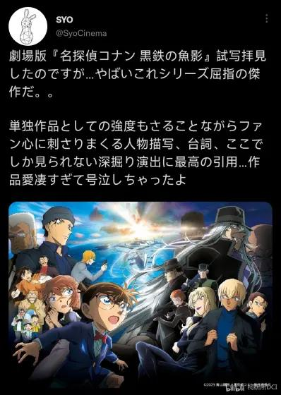
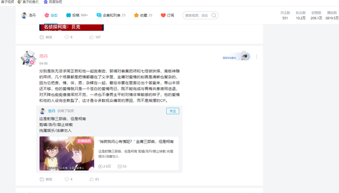

超长预警
dd
火钳刘明
蹲
cy
插眼
2024-03-17 06:00 | 贴吧用户_G54V35e:插眼
艰苦卓绝
赶上直播了？
2024-03-16 06:35 | 贴吧用户_G7Q9M2N:点个收藏先
蹲
2023年1月1日，是灰原哀年的开端，但在国内的柯南圈，仍然是新兰的天下。
既已从地狱归来，又怎么会恐惧地狱。
鉴于大家由可能从今年才入的坑，所以我给大家说一下之前柯哀党的处境。
在之前，柯哀在中国柯南圈是一个禁忌的词汇，除了柯哀相关的专门平台，几乎是被确认身份后就开始网暴。
既已从地狱归来，又怎么会恐惧地狱。
鉴于大家由可能从今年才入的坑，所以我给大家说一下之前柯哀党的处境。
在之前，柯哀在中国柯南圈是一个禁忌的词汇，除了柯哀相关的专门平台，几乎是被确认身份后就开始网暴。
2024-03-19 04:12 | tuokie🌋:甚至在自家柯哀的视频里看看甜向互动，都会一直被新兰党骚扰，跑我们自家视频下面骂我们，一脸得意炫耀他们官配的地位2024-04-18 12:37 | 黑♂暗派蒙º:好真实，我换了个柯哀头像都要被群里的人点草一顿，反驳就说官配，漫画是没看过的，动画是童年滤镜的，cp认知是随网络宣传随大流的，只能说云狗聚集起来就像骑脸的飞龙，根本无力反驳
火钳刘明
没了
2024-03-16 07:09 | yan771104:怎么可能，至少更一个月
已标记
dd
知乎，因为平台原因，处境稍微好点，但也是被当做异端。但还是出现了林原惠美黄谣事件
B站，具体见撕标签事件，只是因为通用的规则，导致新兰的经典级数同时出现了新和哀的标签已经没给出场900级的毛利兰打标签就被骂上热搜。
微博更是官方只要有一点柯哀互动就一定会被骂上热搜。
B站，具体见撕标签事件，只是因为通用的规则，导致新兰的经典级数同时出现了新和哀的标签已经没给出场900级的毛利兰打标签就被骂上热搜。
微博更是官方只要有一点柯哀互动就一定会被骂上热搜。
2024-03-16 07:50 | 游艺猎人😾:啊，当年的B站标签事件让我实实在在的认识到了那群∠处是有多逆天。。。2024-03-16 13:16 | 泽田🔥纲吉:🦶➗逆天不是一天兩天了2024-03-17 05:55 | 贴吧用户_Q1byXCP:林原黄谣是微博那个maoyuanji传的，知乎有关问题的回答几乎是柯哀阵地2024-03-17 06:59 | 六尺孤安在:回复 贴吧用户_Q1byXCP :2024-03-19 21:00 | 贴吧用户_Q1byXCP:b乎你按倒序看还是吗？
回复 六尺孤安在 :我当时全程跟的我不知道？现在如果不是那就是有🦶➗趁机岁月史书呗
编年史
冲晕过去了？这也不是孙吧啊
2024-03-16 07:34 | yan771104:没有，只是一个纪念2024-03-18 03:09 | 音子0806:纪念一下反侵略斗争怎么你了
一暗流汹涌——2023年初各方动态。
灰原哀粉，极度期待，哀当时是明确的主役，自然是万众瞩目，且2022刚赢得女性投票第一，m25又因为特殊原因遗恨百亿。
兰粉，自然一个样，希望m26暴死
新兰粉同上
柯哀粉，当时也是极为期待。
当然还要加上琴哀粉丝。
2022年11月25日，2023年剧场版26标题确定：黑铁的鱼影（直译）。 *原文为“黒鉄の魚影(サブマリン)”。 “鱼影”标注的片假名サブマリン（submarine）直接意思是潜水艇。 该剧场版预计于2023年4月14日在日本上映。
灰原哀粉，极度期待，哀当时是明确的主役，自然是万众瞩目，且2022刚赢得女性投票第一，m25又因为特殊原因遗恨百亿。
兰粉，自然一个样，希望m26暴死
新兰粉同上
柯哀粉，当时也是极为期待。
当然还要加上琴哀粉丝。
2022年11月25日，2023年剧场版26标题确定：黑铁的鱼影（直译）。 *原文为“黒鉄の魚影(サブマリン)”。 “鱼影”标注的片假名サブマリン（submarine）直接意思是潜水艇。 该剧场版预计于2023年4月14日在日本上映。
2024-03-16 14:27 | 肖邦喜欢柯哀:m25特殊原因没有百亿，是什么原因呢，好奇2024-03-16 20:03 | 叽叽喳喳🐴:同问m25没有百亿的特殊原因2024-03-17 00:54 | 2014只蝴蝶飞过:回复 肖邦喜欢柯哀 :是不是因为疫情啊2024-03-17 00:54 | 2014只蝴蝶飞过:回复 叽叽喳喳🐴 :是不是因为疫情啊2024-03-17 10:40 | yan771104:不，俄乌战争2024-03-17 23:32 | 藏白白▫:回复 yan771104 :啊？求解，俄乌战争也影响日本人看电影了吗？我不太懂这个，懵……2024-03-18 21:59 | 奥斯丁格理芬:回复 藏白白▫ :日本支持乌克兰，m25正反两方都有毛子，还有最后柯南劝女毛子放弃复仇。2024-03-19 00:12 | 藏白白▫:回复 奥斯丁格理芬 :哦哦，谢谢2024-04-07 06:30 | 贴吧用户_QJtE7eE:不懂为啥直译，我看到这个标题，跟水下恋爱喜剧也是一点关系都连不上
支持修史
cy
二初日之战
2023年12月31日青山刚昌新年贺卡
「今年剧场版主角是我灰原哀！！划重点后面要考！！」 2名侦探柯南中国官方微博 于2023年01月01日 12:04 来自 名侦探柯南超话
2️⃣0️⃣2️⃣3️⃣年就要用新兰打开
2023年12月31日青山刚昌新年贺卡
「今年剧场版主角是我灰原哀！！划重点后面要考！！」 2名侦探柯南中国官方微博 于2023年01月01日 12:04 来自 名侦探柯南超话
2️⃣0️⃣2️⃣3️⃣年就要用新兰打开
2024-03-16 08:21 | 971127💤:22年12月31日吧2024-03-16 08:26 | yan771104:抱歉打错了2024-03-28 10:02 | 茶发小哀Ai:逆天官博
cy
插眼
cy，全程关注了23年的战役，还记得看到wb某条消息时的震惊（这条消息就由lz来说吧）
笑死了，那边还倒打一耙说就是擦擦到处跳，柯哀两位被骂都是擦的锅呢
2024-03-16 12:13 | 贴吧用户_GbQK6b2:2024-03-16 16:24 | NCC74656Voyage:2024-03-20 13:15 | 幽翼丶😲:2024-04-03 03:13 | Zykey😄:

cy 哥们真想看
刘明
cy
cy
然后，守护宣言2023年1月2日
灰原：你会好好保护我的吧？柯南：当、当然……
灰原：你会好好保护我的吧？柯南：当、当然……
2024-03-19 05:38 | 黑暗刺猬-夏特:两人都带着眼镜
三哀年开启
2022年1月7日TV动画2023年第一话
哀发表，今年的主角是我，哀年正式开启。
2022年1月7日TV动画2023年第一话
哀发表，今年的主角是我，哀年正式开启。
2024-03-16 11:34 | 花花🌸与超人:又打错了吧2024-03-17 10:14 | yan771104:抱歉，键盘有点问题。

cy
四物语战争
2022-12-02剧场版M26预热总集篇《灰原哀物语 ～黑铁的神秘火车～》海报公开，2023年1月6日日本上映。
2022-12-02剧场版M26预热总集篇《灰原哀物语 ～黑铁的神秘火车～》海报公开，2023年1月6日日本上映。
上周3日累计为1.92亿日元。总票房7亿3226万4620日元。
因为总集篇的票房必然趋势，导致比原作下降不少，也算是失利之战。
新兰党当时以此预言m26暴死，但事情真会是这样吗？
因为总集篇的票房必然趋势，导致比原作下降不少，也算是失利之战。
新兰党当时以此预言m26暴死，但事情真会是这样吗？
Cy
五海报之战
2023年1月27日《黑铁的鱼影》正式海报公开 ！
2023年1月27日《黑铁的鱼影》正式海报公开 ！
2024-03-16 13:17 | 泽田🔥纲吉:更新啊
cy
顶

顶

dd
顶🔝
好早的开头
插眼
414微博热搜五百多万，打了两天一夜
芜湖，支持正义岁月史书！
刚刚回复错了 插个眼感觉会火
插个眼感觉会火
插个眼感觉会火顶
cycy
和新兰打架挺无聊的
我都忘了是几月被炸回来的了。退坑好几年了，突然名柯相关的信息疯狂上首页。
必须顶！
我正是在四月看到论战回来滴！
无所谓
真正的编年史
芜湖
cy
cy
bdd
催更催更
cy
省流：第n次柯哀新兰大战，青山踢了鹦鹉，御驾亲征。
2024-03-18 22:26 | 奥斯丁格理芬:不，是明修栈道，暗度陈仓。青山的连环迷踪腿和睡梦罗汉拳把鹦鹉给迷惑了，sr以为是飞龙骑脸，结果是反杀。
快更快更
柯哀大史官
收藏了
蹲
人呢？
cy
楼主呢，快更啊
cy＋顶一个，支持正义岁月史书！
楼主再多发一点吧，我什么都会做的
gkd
不要睡觉了，快更
生产队的驴都不敢这么歇
dd
gkdgkd
2024-03-16 22:44 | 仪琳小乖:3
lz骇呀隔
gkd

不管怎么样，柯哀必胜
麦克阿瑟来了都得直呼顶尖
感觉我真是经历了柯哀的二三三四五战啊
生产队的驴都不敢这么歇，快更快更
cy
生产队的驴都不敢这么歇
cy
cy
cy
cy2023柯哀大事记

楼主快更啊，怎么休息了
插眼等史官😋
六蟹之战
2023年1月5日，かに吉（蟹吉）在社交媒体上晒出了本年度青山赠予该店的签绘色纸。*かに吉是鸟取市一家以松叶蟹闻名的螃蟹料理店，曾获2019年度米其林二星评级。内容翻译如下：小哀：（适量是多少mL啊……）柯南：这又不是做实验……
2023年1月5日，かに吉（蟹吉）在社交媒体上晒出了本年度青山赠予该店的签绘色纸。*かに吉是鸟取市一家以松叶蟹闻名的螃蟹料理店，曾获2019年度米其林二星评级。内容翻译如下：小哀：（适量是多少mL啊……）柯南：这又不是做实验……
2024-03-17 10:28 | yan771104:抱歉，这是番外，因为电脑问题，没发出去。2024-03-19 05:40 | 黑暗刺猬-夏特:图中柯南是看穿了灰原心思还是单纯在吐槽行为
好好好，我直接收藏
至此，战争的第一阶段已经结束，总体上没有大的战争，下周六，我将给大家带来，
1优衣库战争
2空腹战争
3朗姆之夜
敬请期待
1优衣库战争
2空腹战争
3朗姆之夜
敬请期待
2024-03-19 04:06 | lolololvo:优衣库战争确实闹挺大2024-03-21 06:13 | 花花🌸与超人:好2024-03-23 03:52 | 雾琦冥幻:下周六？呀，我就是在下周六刷到的
cy
cy
追了全程呜呜呜(┯_┯)感慨
下周六？谁允许停更一周的，楼主打一次🦶要歇一周
谁允许停更一周的，楼主打一次🦶要歇一周2024-03-23 08:54 | yan771104:现在更了
一股浓浓的我初中看的《二战全史》味道
一周？生产队的驴都没你能歇
Cy
赶上直播了
cy
🐎

快更
cy
cy
说起来，我记得2023年前几个月有人在b站做过整合兰粉逆天操作和柯哀预热一类的
2024-03-20 13:42 | 某天君00:如果有需要可以看一看，2023变化太大了2024-03-22 10:18 | yan771104:谢谢
cy
插眼
顶
空腹战争——柯哀党你们现在一定饥肠辘辘了吧。
2024-03-22 10:52 | 印象园园:催更
柯哀党从诞生开始便一直处于饥饿的状态，以第二大bg的体量，却连新兰的十分之一的糖都没有。甚至不得不从字逢里扣糖。即使这样还要面临新兰无穷无尽的打压，但是，记住，接下来，就是盛大宴席的开端——空腹战争。
一风雨欲来
20231月21日 TV动画即将更换新ED，由今夜、あの街から与VALSHE共同演唱，标题为《クウフク》，2月18日启用。
20231月21日 TV动画即将更换新ED，由今夜、あの街から与VALSHE共同演唱，标题为《クウフク》，2月18日启用。
二第一次CD之战
【Being】由今夜、あの街から演唱的ED68《クウフク(starring VALSHE)》歌曲实体CD特典和歌曲收录信息公开。
【特典相关】CD封面和特典立牌的角色是工藤新一和宫野志保。
【CD收录信息】ED68歌曲完整版、TV size版、VOCALOID虚拟声源版和伴奏。 @264w_264h_1e_1c.webp @264w_264h_1e_1c.webp
@264w_264h_1e_1c.webp
【Being】由今夜、あの街から演唱的ED68《クウフク(starring VALSHE)》歌曲实体CD特典和歌曲收录信息公开。
【特典相关】CD封面和特典立牌的角色是工藤新一和宫野志保。
【CD收录信息】ED68歌曲完整版、TV size版、VOCALOID虚拟声源版和伴奏。 @264w_264h_1e_1c.webp
三217之殇
2023年2月17日由 今夜、あの街から 演唱的TV动画ED68《クウフク(starring VALSHE)》画面公开，明日启用。
【柯南ED68】今夜、あの街から《クウフク(starring VALSHE)》_哔哩哔哩_bilibili
画面让我想到了op35神秘小姐，
I love you Miss Mystery
I love you Miss Mystery
我喜欢你 谜小姐
果はてのないラビリンス
ha te no na i ra bi rin su
在没有尽头的迷宫中
この愛あいを抱だきしめて
ko no ai o da ki shi me te
拥抱这份爱情
いま謎なぞを解とき明あかして
i ma na zo o to ki a ka shi te
现在解开谜团
君きみはミステリアスガール
ki mi wa mi su te ri a su gaa ru
你是神秘的少女
ジュエルのように輝かがやいて
ju e ru no you ni ka ga ya i te
像宝石一样闪耀摩天楼
まてんろうの灯あかりさえ
ma ten rou no a ka ri sa e
连摩天楼的灯光
也不及你的光芒
その濡ぬれた瞳ひとみは
so no nu re ta hi to mi wa
那湿润的双眼
何なにを映うつし出だしているの
na ni o u tsu shi da shi te i ru no
映照出了什么
謎なぞめいた視線しせんの先さき
na zo me i ta shi sen no sa ki
神秘视线的尖端
僕ぼくをそっと見みつめてる
bo ku o so tto mi tsu me te ru
悄悄对准了我迷宮
めいきゅう入いりの恋こい 難攻不落なんこうふら
くmei kyuu i ri no ko i nan kou fu ra ku
陷入迷宫的恋爱 坚不可摧真実
しんじつはひとつだけ
shin ji tsu wa hi to tsu da ke
真相只有一个
答こたえは君きみの中なかに
ko ta e wa ki mi no na ka ni答案在你心中
I love you Miss MysteryI love you Miss Mystery
我喜欢你 谜小姐
果はてのないラビリンス
ha te no na i ra bi rin su在没有尽头的迷宫中
この愛あいを抱だきしめて
ko no ai o da ki shi me te
拥抱这份爱情
いま謎なぞを解とき明あかして
i ma na zo o to ki a ka shi te
现在解开谜团
I miss you Miss MysteryI miss you Miss Mystery
我好想你 谜小姐
君きみの全すべてを知しりたい
ki mi no su be te o shi ri ta i
想了解你的全部
必かならず暴あばいて見みせる
ka na ra zu a ba i te mi se ru
必须破解偽装
つくられたアリバイを壊こわして
tsu ku ra re ta a ri bai o ko wa shi te
伪造的不在场证明
君きみの前まえで霞かすんで
ki mi no ma e de ka su n de
昨日きのうは花はなのように
ki nou wa ha na no you ni
昨天 像花一样
優やさしく微笑ほほえみかけて
ya sa shi ku ho ho e mi ka ke te
温柔地微笑着今日
きょうは何故なぜ 氷こおりのように
kyou wa na ze koo ri no you ni
今天 为何像冰一样冷
つめたすぎるクチビル
tsu me ta su gi ru ku chi bi ru
嘴唇过于冰冷無邪気むじゃきに笑わらい 踊おどる君きみ
mu ja ki ni wa ra i o do ru ki mi
天真地笑着 舞动的你
シェリーを口くちにする度たび
she rii o ku chi ni su ru ta bi
每当喝下雪莉
妖艶ようえん&豹変ひょうへん
you en hyou hen
妖艳&豹变大人
おとなの女おんなに変かわってく
（Try to catch me）o to na no on na ni ka wa tte ku（try to catch me）
都会变成熟女（试着追上我）
終おわりのない迷路めいろ オニサンコチラ
o wa ri no na i mei ro o ni san ko chi ra
来吧 迷宫没有终点足音
あしおとの鳴なる方ほうへ追おいかけて
a shi o to no na ru hou e o i ka ke te
往脚步声的方向追赶その手て掴つかんでもすり抜ぬけてゆ
くso no te tsu ka n de mo su ri nu ke te yu ku
掌中之物 未必在掌握之中
また君きみの罠わなに捕とらわれる
ma ta ki mi no wa na ni to ra wa re ru
又中了你的圈套
君きみに逢あいたくて
ki mi ni a i ta ku te
想见你
君きみだけを求もとめてる
ki mi da ke o mo to me te ru
只追求你
いつの日ひか辿たどりつ
くi tsu no hi ka ta do ri tsu ku
总有一天会到达出口
でぐちに続つづく扉とびらへ
de gu chi ni tsu zu ku to bi ra e
通往出口的门
I love you Miss MysteryI love you Miss Mystery
我喜欢你 谜小姐果
はてのないラビリンスha te no na i ra bi rin su
在没有尽头的迷宫中
この愛あいを抱だきしめて
ko no ai o da ki shi me te
拥抱这份爱情
いま謎なぞを解とき明あかして
i ma na zo o to ki a ka shi te
现在解开谜团
I miss you Miss MysteryI miss you Miss Mystery
我好想你 谜小姐君きみの全すべてを知しりたい
ki mi no su be te o shi ri ta i
想了解你的全部
必かならず暴あばいて見みせるka na ra zu a ba i te mi se ru
必须将诡计偽装
つくられたアリバイを トリックを
tsu ku ra re ta a ri bai o to ri kku o
与伪造的不在场证明
全すべて解とき明あかしてsu be te to ki a ka shi te
全部破解
2023年2月17日由 今夜、あの街から 演唱的TV动画ED68《クウフク(starring VALSHE)》画面公开，明日启用。
【柯南ED68】今夜、あの街から《クウフク(starring VALSHE)》_哔哩哔哩_bilibili
画面让我想到了op35神秘小姐，
I love you Miss Mystery
I love you Miss Mystery
我喜欢你 谜小姐
果はてのないラビリンス
ha te no na i ra bi rin su
在没有尽头的迷宫中
この愛あいを抱だきしめて
ko no ai o da ki shi me te
拥抱这份爱情
いま謎なぞを解とき明あかして
i ma na zo o to ki a ka shi te
现在解开谜团
君きみはミステリアスガール
ki mi wa mi su te ri a su gaa ru
你是神秘的少女
ジュエルのように輝かがやいて
ju e ru no you ni ka ga ya i te
像宝石一样闪耀摩天楼
まてんろうの灯あかりさえ
ma ten rou no a ka ri sa e
连摩天楼的灯光
也不及你的光芒
その濡ぬれた瞳ひとみは
so no nu re ta hi to mi wa
那湿润的双眼
何なにを映うつし出だしているの
na ni o u tsu shi da shi te i ru no
映照出了什么
謎なぞめいた視線しせんの先さき
na zo me i ta shi sen no sa ki
神秘视线的尖端
僕ぼくをそっと見みつめてる
bo ku o so tto mi tsu me te ru
悄悄对准了我迷宮
めいきゅう入いりの恋こい 難攻不落なんこうふら
くmei kyuu i ri no ko i nan kou fu ra ku
陷入迷宫的恋爱 坚不可摧真実
しんじつはひとつだけ
shin ji tsu wa hi to tsu da ke
真相只有一个
答こたえは君きみの中なかに
ko ta e wa ki mi no na ka ni答案在你心中
I love you Miss MysteryI love you Miss Mystery
我喜欢你 谜小姐
果はてのないラビリンス
ha te no na i ra bi rin su在没有尽头的迷宫中
この愛あいを抱だきしめて
ko no ai o da ki shi me te
拥抱这份爱情
いま謎なぞを解とき明あかして
i ma na zo o to ki a ka shi te
现在解开谜团
I miss you Miss MysteryI miss you Miss Mystery
我好想你 谜小姐
君きみの全すべてを知しりたい
ki mi no su be te o shi ri ta i
想了解你的全部
必かならず暴あばいて見みせる
ka na ra zu a ba i te mi se ru
必须破解偽装
つくられたアリバイを壊こわして
tsu ku ra re ta a ri bai o ko wa shi te
伪造的不在场证明
君きみの前まえで霞かすんで
ki mi no ma e de ka su n de
昨日きのうは花はなのように
ki nou wa ha na no you ni
昨天 像花一样
優やさしく微笑ほほえみかけて
ya sa shi ku ho ho e mi ka ke te
温柔地微笑着今日
きょうは何故なぜ 氷こおりのように
kyou wa na ze koo ri no you ni
今天 为何像冰一样冷
つめたすぎるクチビル
tsu me ta su gi ru ku chi bi ru
嘴唇过于冰冷無邪気むじゃきに笑わらい 踊おどる君きみ
mu ja ki ni wa ra i o do ru ki mi
天真地笑着 舞动的你
シェリーを口くちにする度たび
she rii o ku chi ni su ru ta bi
每当喝下雪莉
妖艶ようえん&豹変ひょうへん
you en hyou hen
妖艳&豹变大人
おとなの女おんなに変かわってく
（Try to catch me）o to na no on na ni ka wa tte ku（try to catch me）
都会变成熟女（试着追上我）
終おわりのない迷路めいろ オニサンコチラ
o wa ri no na i mei ro o ni san ko chi ra
来吧 迷宫没有终点足音
あしおとの鳴なる方ほうへ追おいかけて
a shi o to no na ru hou e o i ka ke te
往脚步声的方向追赶その手て掴つかんでもすり抜ぬけてゆ
くso no te tsu ka n de mo su ri nu ke te yu ku
掌中之物 未必在掌握之中
また君きみの罠わなに捕とらわれる
ma ta ki mi no wa na ni to ra wa re ru
又中了你的圈套
君きみに逢あいたくて
ki mi ni a i ta ku te
想见你
君きみだけを求もとめてる
ki mi da ke o mo to me te ru
只追求你
いつの日ひか辿たどりつ
くi tsu no hi ka ta do ri tsu ku
总有一天会到达出口
でぐちに続つづく扉とびらへ
de gu chi ni tsu zu ku to bi ra e
通往出口的门
I love you Miss MysteryI love you Miss Mystery
我喜欢你 谜小姐果
はてのないラビリンスha te no na i ra bi rin su
在没有尽头的迷宫中
この愛あいを抱だきしめて
ko no ai o da ki shi me te
拥抱这份爱情
いま謎なぞを解とき明あかして
i ma na zo o to ki a ka shi te
现在解开谜团
I miss you Miss MysteryI miss you Miss Mystery
我好想你 谜小姐君きみの全すべてを知しりたい
ki mi no su be te o shi ri ta i
想了解你的全部
必かならず暴あばいて見みせるka na ra zu a ba i te mi se ru
必须将诡计偽装
つくられたアリバイを トリックを
tsu ku ra re ta a ri bai o to ri kku o
与伪造的不在场证明
全すべて解とき明あかしてsu be te to ki a ka shi te
全部破解
2024-03-23 08:25 | yan771104:不对，是op33，我这个电脑不好用，打字会有错误
结果呢，OP33-Miss Mystery(642~666)_哔哩哔哩_bilibili
可能是制作组认为毛利兰喝掉雪莉酒会变大吧。
始はじまりの鐘かねだって 身勝手みがってに奏かなでては
ha ji ma ri no ka ne da tte mi ga tte ni ka na de te wa
启程的钟声 自顾自地响起
そんじゃまたね、なんて 吐はき出だされるがまま
son ja ma ta ne nan te ha ki da sa re ru ga ma ma
分别的话语 就这样说出口
泣ないて笑わらってわかんなくなって わかったふりして笑わらえなくなった
na i te wa ra tte wa ka n na ku na tte wa ka tta fu ri shi te wa ra e na ku na tta
哭笑不得 假装想通 却笑不出
あれ何なにをやっていたんだ?
a re na ni o ya tte i ta n da这是在干什么？
肩代かたがわりのアイラブユーを飲のんだ 愛想あいそだって喰くらい尽つくした
ka ta ga wa ri no ai ra bu yuu o no n da ai sou da tte ku ra i tsu ku shi ta
挑在满是错误的今天
間違まちがいだらけの今日きょうを摘つまんでいた
ma chi ga i da ra ke no kyou o tsu ma n de i ta
吞下代替讨好的告白
もうどっちだっていいんだ ここを望のぞんだ
mou do tchi da tte ii n da ko ko o no zo n da
选择哪天已无所谓嘲笑
あざわらうように顔かおを上あげて
a za wa ra u you ni ka o o a ge te
自嘲般地抬头仰望
アイムハングリー だって可哀想かわいそうじゃん
ai mu han gu rii da tte ka wa i sou jan
饥饿的我实在可怜幸福
こうふくの下味したあじに僕ぼくらは合あっていないの
kou fu ku no shi ta a ji ni bo ku ra wa a tte i na i no
幸福的底料不适合我们
アングリーなんて疲つかれちゃうの
an gu rii nan te tsu ka re cha u no
愤怒令人疲倦フルコースだって味あじがしないようで
fu ru koo su da tte a ji ga shi na i you de
西式全餐似乎索然无味
コウフク過多かたの幻想げんそう 取とり分わけた確信犯かくしんはんと暴走ぼうそう
kou fu ku ka ta no gen sou to ri wa ke ta ka ku shin han to bou sou
幸福过多的幻想 特别不听使唤
どこか足たりないなんてまた思おもってしまった
do ko ka ta ri na i nan te ma ta o mo tte shi ma tta
总觉得有所欠缺執着
しゅうちゃくなんてしないの だけどその溢あふれるほどの愛あいを
shuu cha ku nan te shi na i no da ke do so no a fu re ru ho do no ai o
并不固执 却无法理解满溢的爱
わからないよ わからないを食たべ続つづけて
wa ka ra na i yo wa ka ra na i o ta be tsu zu ke te
继续吞食心中的不解アイムハングリー だって可哀想かわいそうじゃん
ai mu han gu rii da tte ka wa i sou jan
饥饿的我实在可怜幸福
こうふくのスパイスだけ積つみ上あがってゆくんだ
kou fu ku no su pai su da ke tsu mi a ga tte yu ku n da
只有幸福的香料不断堆积
レイジー今日きょうも重かさねるまま
rei jii kyou mo ka sa ne ru ma ma
懒惰反复出现 今天也一样
メインディッシュなんて ここには無ないようで
mein di sshu nan te ko ko ni wa na i you de
这里似乎没有主菜
サースティ だって可哀想かわいそうじゃん
saa su ti da tte ka wa i sou jan
触及幸福而感到口渴幸福
こうふくに触ふれるほど喉のどが渇かわいていくんだ
kou fu ku ni fu re ru ho do no do ga ka wa i te i ku n da
实在可怜
レイジー饗きょうを重かさねるなら
rei jii kyou o ka sa ne ru na ra
如若掺杂懒惰フルコースだって味あじがしないから
fu ru koo su da tte a ji ga shi na i ka ra
西式全餐就会索然无味
ハングリー そうだ探さがしてんだ
han gu rii sou da sa ga shi te n da
世界令人饥渴
クウフクで乾かわいた世界せかいを歩あゆんでいく意味いみを
kuu fu ku de ka wa i ta se kai o a yu n de i ku i mi o
探寻徘徊其中的意义
セオリー通どおり満みたせるような
se o rii doo ri mi ta se ru you na
似乎符合理论的是
フルコースなんて必要ひつようないようで
fu ru koo su nan te hi tsu you na i you de
西式全餐没有必要享用
ha ji ma ri no ka ne da tte mi ga tte ni ka na de te wa
启程的钟声 自顾自地响起
そんじゃまたね、なんて 吐はき出だされるがまま
son ja ma ta ne nan te ha ki da sa re ru ga ma ma
分别的话语 就这样说出口
泣ないて笑わらってわかんなくなって わかったふりして笑わらえなくなった
na i te wa ra tte wa ka n na ku na tte wa ka tta fu ri shi te wa ra e na ku na tta
哭笑不得 假装想通 却笑不出
あれ何なにをやっていたんだ?
a re na ni o ya tte i ta n da这是在干什么？
肩代かたがわりのアイラブユーを飲のんだ 愛想あいそだって喰くらい尽つくした
ka ta ga wa ri no ai ra bu yuu o no n da ai sou da tte ku ra i tsu ku shi ta
挑在满是错误的今天
間違まちがいだらけの今日きょうを摘つまんでいた
ma chi ga i da ra ke no kyou o tsu ma n de i ta
吞下代替讨好的告白
もうどっちだっていいんだ ここを望のぞんだ
mou do tchi da tte ii n da ko ko o no zo n da
选择哪天已无所谓嘲笑
あざわらうように顔かおを上あげて
a za wa ra u you ni ka o o a ge te
自嘲般地抬头仰望
アイムハングリー だって可哀想かわいそうじゃん
ai mu han gu rii da tte ka wa i sou jan
饥饿的我实在可怜幸福
こうふくの下味したあじに僕ぼくらは合あっていないの
kou fu ku no shi ta a ji ni bo ku ra wa a tte i na i no
幸福的底料不适合我们
アングリーなんて疲つかれちゃうの
an gu rii nan te tsu ka re cha u no
愤怒令人疲倦フルコースだって味あじがしないようで
fu ru koo su da tte a ji ga shi na i you de
西式全餐似乎索然无味
コウフク過多かたの幻想げんそう 取とり分わけた確信犯かくしんはんと暴走ぼうそう
kou fu ku ka ta no gen sou to ri wa ke ta ka ku shin han to bou sou
幸福过多的幻想 特别不听使唤
どこか足たりないなんてまた思おもってしまった
do ko ka ta ri na i nan te ma ta o mo tte shi ma tta
总觉得有所欠缺執着
しゅうちゃくなんてしないの だけどその溢あふれるほどの愛あいを
shuu cha ku nan te shi na i no da ke do so no a fu re ru ho do no ai o
并不固执 却无法理解满溢的爱
わからないよ わからないを食たべ続つづけて
wa ka ra na i yo wa ka ra na i o ta be tsu zu ke te
继续吞食心中的不解アイムハングリー だって可哀想かわいそうじゃん
ai mu han gu rii da tte ka wa i sou jan
饥饿的我实在可怜幸福
こうふくのスパイスだけ積つみ上あがってゆくんだ
kou fu ku no su pai su da ke tsu mi a ga tte yu ku n da
只有幸福的香料不断堆积
レイジー今日きょうも重かさねるまま
rei jii kyou mo ka sa ne ru ma ma
懒惰反复出现 今天也一样
メインディッシュなんて ここには無ないようで
mein di sshu nan te ko ko ni wa na i you de
这里似乎没有主菜
サースティ だって可哀想かわいそうじゃん
saa su ti da tte ka wa i sou jan
触及幸福而感到口渴幸福
こうふくに触ふれるほど喉のどが渇かわいていくんだ
kou fu ku ni fu re ru ho do no do ga ka wa i te i ku n da
实在可怜
レイジー饗きょうを重かさねるなら
rei jii kyou o ka sa ne ru na ra
如若掺杂懒惰フルコースだって味あじがしないから
fu ru koo su da tte a ji ga shi na i ka ra
西式全餐就会索然无味
ハングリー そうだ探さがしてんだ
han gu rii sou da sa ga shi te n da
世界令人饥渴
クウフクで乾かわいた世界せかいを歩あゆんでいく意味いみを
kuu fu ku de ka wa i ta se kai o a yu n de i ku i mi o
探寻徘徊其中的意义
セオリー通どおり満みたせるような
se o rii doo ri mi ta se ru you na
似乎符合理论的是
フルコースなんて必要ひつようないようで
fu ru koo su nan te hi tsu you na i you de
西式全餐没有必要享用
创作者诺拉十分仰慕作为前辈的VALSHE，认为VALSHE的音乐既炫酷又充满力量，还带有一些温暖的感觉，可谓以“强有力的温柔”为轴。2022年9月，诺拉观看了VALSHE的个人演唱会，被VALSHE的舞台震撼力打动，于是在演唱会结束后向VALSHE提出了合作的想法。VALSHE在听过诺拉创作的乐曲后，表示非常乐意参与合作。
关于曲名使用片假名的原因，诺拉表示：「汉字“空腹”与片假名看上去不太一样，片假名简单来说是“怎么吃也不饱”的意思。引申到爱情就是，明明有很多，却不知为何无法满足。」
記者：おふたりがコラボレーションすることになったきっかけから教えていただけますか？
ノラ：事務所の先輩でもあり、憧れの人でもありました。VALSHEさんの音楽はクールでパワフルで。それに加えて、どこか優しさも感じるんですよね。力強い優しさが軸になっているような気がしました。昨年9月のワンマンライブにお邪魔させていただいたのですが、パフォーマンス、パワーに圧倒されてました。音源よりもさらに胸にくるものがあって……。
VALSHE：ありがとうございます、うれしいですね（笑）。
ノラ：今まで見たことのない迫力のステージでとにかく新鮮でした。終演後にご挨拶させてもらったのですが、その勢いのまま「いつか何かご一緒にさせてください」と言わせてもらって。それを受けてくださったという感じです。僕としては念願のコラボレーションでした。
VALSHE：お声掛けいただいたときが次回のアルバムの制作に入っていたんですよね。つまりアウトプットをはじめていた時期で。自分の中で、コラボレーションは、インプットとアウトプットが同時にできるものというイメージがありました。そういう意味で自分にとっても良いタイミングでしたし、ライブに来ていただいたことをきっかけに楽曲も聴かせてもらっていたので、ものすごくポジティブな気持ちで「ぜひ！」と。
記者：「クウフク」ってものすごく印象的なタイトルで。漢字で見るのとカタカナで見るのとで、こんなに違いがあるものなんだなとハッとさせられました。
ノラ：ちがうものみたいに見えますよね。「クウフク」は分かりやすくいうと、「食べても食べても満たされない」というお話なんですよね。それに加えて、愛の話でもあるんです。たくさんあるのに、たくさんあるからこそ、なぜか満たされない。そういうことを歌いたかったんです。
关于曲名使用片假名的原因，诺拉表示：「汉字“空腹”与片假名看上去不太一样，片假名简单来说是“怎么吃也不饱”的意思。引申到爱情就是，明明有很多，却不知为何无法满足。」
記者：おふたりがコラボレーションすることになったきっかけから教えていただけますか？
ノラ：事務所の先輩でもあり、憧れの人でもありました。VALSHEさんの音楽はクールでパワフルで。それに加えて、どこか優しさも感じるんですよね。力強い優しさが軸になっているような気がしました。昨年9月のワンマンライブにお邪魔させていただいたのですが、パフォーマンス、パワーに圧倒されてました。音源よりもさらに胸にくるものがあって……。
VALSHE：ありがとうございます、うれしいですね（笑）。
ノラ：今まで見たことのない迫力のステージでとにかく新鮮でした。終演後にご挨拶させてもらったのですが、その勢いのまま「いつか何かご一緒にさせてください」と言わせてもらって。それを受けてくださったという感じです。僕としては念願のコラボレーションでした。
VALSHE：お声掛けいただいたときが次回のアルバムの制作に入っていたんですよね。つまりアウトプットをはじめていた時期で。自分の中で、コラボレーションは、インプットとアウトプットが同時にできるものというイメージがありました。そういう意味で自分にとっても良いタイミングでしたし、ライブに来ていただいたことをきっかけに楽曲も聴かせてもらっていたので、ものすごくポジティブな気持ちで「ぜひ！」と。
記者：「クウフク」ってものすごく印象的なタイトルで。漢字で見るのとカタカナで見るのとで、こんなに違いがあるものなんだなとハッとさせられました。
ノラ：ちがうものみたいに見えますよね。「クウフク」は分かりやすくいうと、「食べても食べても満たされない」というお話なんですよね。それに加えて、愛の話でもあるんです。たくさんあるのに、たくさんあるからこそ、なぜか満たされない。そういうことを歌いたかったんです。
ED68-如饥似渴(starring VALSHE) (1074~1087)_哔哩哔哩_bilibili
内容 来源
贝尔摩德房间内的飞镖盘 TV272《遮挡与匆忙省略（后篇）》
冲矢招待茱蒂和卡迈尔 TV783《绯色的真相》
小兰撑着雨伞，眼角挂着泪滴 TV288《工藤新一纽约事件（解决篇）》
小兰抹去眼角的泪滴 TV309《与黑衣组织的接触（交涉篇）》
有希子身处铃木号特快列车的7号车B室 TV704《漆黑的特快列车（终点）》
玛丽身处伦敦 TV1045《天罚降临的生日派对（前篇）》
茱蒂趴在方向盘上痛哭 TV504《红与黑的碰撞 殉职》
明美含着泪微笑 TV502《红与黑的碰撞 清白》
赤井在医院的天台看明美的短信 TV497《红与黑的碰撞 觉醒》
幼年茱蒂拿着小熊玩偶 TV345《与黑衣组织正面对决 满月之夜的双重谜案》
贝尔摩德房间内的飞镖盘 TV272《遮挡与匆忙省略（后篇）》
冲矢招待茱蒂和卡迈尔 TV783《绯色的真相》
小兰撑着雨伞，眼角挂着泪滴 TV288《工藤新一纽约事件（解决篇）》
小兰抹去眼角的泪滴 TV309《与黑衣组织的接触（交涉篇）》
有希子身处铃木号特快列车的7号车B室 TV704《漆黑的特快列车（终点）》
玛丽身处伦敦 TV1045《天罚降临的生日派对（前篇）》
茱蒂趴在方向盘上痛哭 TV504《红与黑的碰撞 殉职》
明美含着泪微笑 TV502《红与黑的碰撞 清白》
赤井在医院的天台看明美的短信 TV497《红与黑的碰撞 觉醒》
幼年茱蒂拿着小熊玩偶 TV345《与黑衣组织正面对决 满月之夜的双重谜案》
我请问一下，工藤新一呢？
四封面大会战
【Being】由 今夜、あの街から 演唱的TV动画ED68《クウフク(starring VALSHE)》实体CD封面公开，4月12日发售。
【Being】由 今夜、あの街から 演唱的TV动画ED68《クウフク(starring VALSHE)》实体CD封面公开，4月12日发售。
微博战场开始
打的非常激烈，1新志战役，新志tag最先登上热搜，最终为第三。
2封面战役，名侦探柯南最新封面登上热搜，最终第九。
3柯哀大捷，柯哀新兰双双登上热搜，新兰开始领先，最后柯哀登顶，新兰第二——2023年柯南第一次热搜登顶。
打的非常激烈，1新志战役，新志tag最先登上热搜，最终为第三。
2封面战役，名侦探柯南最新封面登上热搜，最终第九。
3柯哀大捷，柯哀新兰双双登上热搜，新兰开始领先，最后柯哀登顶，新兰第二——2023年柯南第一次热搜登顶。
五mv之战
2023年2月25日
由 今夜、あの街から 演唱的 TV动画ED68《クウフク(starring VALSHE)》官方中文版MV公开
【动漫版“名侦探柯南”最新ED】今夜、あの街から『クウフク(如饥似渴)』starring VALSHE-MV_哔哩哔哩_bilibili
2023年2月25日
由 今夜、あの街から 演唱的 TV动画ED68《クウフク(starring VALSHE)》官方中文版MV公开
【动漫版“名侦探柯南”最新ED】今夜、あの街から『クウフク(如饥似渴)』starring VALSHE-MV_哔哩哔哩_bilibili
2023年3月18日
TV动画ED68《クウフク(如饥似渴)》的VOCALOID音源版MV公开！
使用的虚拟声源是【初音未来】
【初音ミク】柯南动画ED68 VOCALOID版MV公开_哔哩哔哩_bilibili
TV动画ED68《クウフク(如饥似渴)》的VOCALOID音源版MV公开！
使用的虚拟声源是【初音未来】
【初音ミク】柯南动画ED68 VOCALOID版MV公开_哔哩哔哩_bilibili
七专访之战
2023年3月7日
名柯ED68专访：意想不到的声音感，不会满足的饥饿感
2023年3月7日
名柯ED68专访：意想不到的声音感，不会满足的饥饿感
八第二次初动之战
2023年3月25日
【Being】由今夜、あの街から演唱的TV动画ED曲《クウフク(starring VALSHE)》实体CD附赠立牌样式公开。 @518w.webp
2023年3月25日
【Being】由今夜、あの街から演唱的TV动画ED曲《クウフク(starring VALSHE)》实体CD附赠立牌样式公开。 @518w.webp
2024-03-23 09:16 | yan771104:真是服了，这台电脑，是CD不是初动
九销量之战
首周销量 4,598张
荣誉 Oricon周榜第13
首周销量 4,598张
荣誉 Oricon周榜第13
优衣库战争——柯哀党的战衣。
2024-03-23 08:38 | yan771104:之前不知道为什么，没发出来
一战衣出场
优衣库（英文名称：UNIQLO，日文假名发音：ユニクロ），为日本迅销公司的核心品牌，建立于1984年，当年是一家销售西服的小服装店，现在已经是家喻户晓的品牌。在2018世界品牌500强排行榜中，优衣库排名第168位。
2023年2月6日【优衣库】联动UT样式公开，4月上旬发售 @518w.webp
优衣库（英文名称：UNIQLO，日文假名发音：ユニクロ），为日本迅销公司的核心品牌，建立于1984年，当年是一家销售西服的小服装店，现在已经是家喻户晓的品牌。在2018世界品牌500强排行榜中，优衣库排名第168位。
2023年2月6日【优衣库】联动UT样式公开，4月上旬发售 @518w.webp
二端水之战
据 官方APP，青山刚昌在前几天身着今年的 UT接受了优衣库的采访，同时绘制了两个签绘。柯南2023款UT内地发售时间从原定的4月10日提前到【4月3日】，各位有兴趣的不要错过哦
据 官方APP，青山刚昌在前几天身着今年的 UT接受了优衣库的采访，同时绘制了两个签绘。柯南2023款UT内地发售时间从原定的4月10日提前到【4月3日】，各位有兴趣的不要错过哦
2024-03-23 09:00 | yan771104:时间2023你2月27日
微博上名侦探柯南cp端水大师登上热搜，位列20
最终，柯哀以5倍的价格爆杀新兰
至此，优衣库战争结束，但这间衣服将跟随柯哀党南征北战，之后成为柯哀党的象征，它的故事远没有结束，麦子，瓶子，清华柯哀党，赌王之子，仓木麻衣都将与其扯上关系。
cy
朗姆之夜——推理党的死刑判决书。
青山刚昌在水了10年之后，终于交代了羽田浩司案的真相。
2022年
11月30日1103话白黑的序盘 白黒の序盤
12月7日.1104话 染血的骑士 血染めの騎士
12月21日.1105 话陷落的泪滴 陥落の涙
2023年
2月1日1106 话锐眼的恶魔 達眼の悪魔
2月8日1107 话远见的角行 遠見の角行 2023/02/08
2月15日.1108 话名人的围玉 名人の囲い
.2月22日1109 话皇后的计谋 女王の謀
2022年
11月30日1103话白黑的序盘 白黒の序盤
12月7日.1104话 染血的骑士 血染めの騎士
12月21日.1105 话陷落的泪滴 陥落の涙
2023年
2月1日1106 话锐眼的恶魔 達眼の悪魔
2月8日1107 话远见的角行 遠見の角行 2023/02/08
2月15日.1108 话名人的围玉 名人の囲い
.2月22日1109 话皇后的计谋 女王の謀
基本就是一坨大bian
推理党与剧情党受到毁灭性的打击，至此，青山刚昌在推理方面可以说江郎才尽，名侦探柯南的支柱正式成为cp粉与角色粉的天下。
推理党与剧情党受到毁灭性的打击，至此，青山刚昌在推理方面可以说江郎才尽，名侦探柯南的支柱正式成为cp粉与角色粉的天下。
cy
继续更
楼主你倒是更啊
dd
鱼影战争——2023年最大的战争
第一阶段2022年4月15日——2023年4月4日
第二阶段2023年4月4日——4月14日，同时也是2023年战争第三阶段
第三阶段2023年4月14日——5月7日，同时也是2023年战争第四阶段
第五阶段2023年5月7日——10月22日，同时也是2023年战争第五阶段
第六阶段2023年10月22日——2024年4月12日，2023年战争截止到2023年12月31日。
第一阶段2022年4月15日——2023年4月4日
第二阶段2023年4月4日——4月14日，同时也是2023年战争第三阶段
第三阶段2023年4月14日——5月7日，同时也是2023年战争第四阶段
第五阶段2023年5月7日——10月22日，同时也是2023年战争第五阶段
第六阶段2023年10月22日——2024年4月12日，2023年战争截止到2023年12月31日。
接下来就有趣的多了，柯哀党新兰党的领导者也将发挥重要作用，以及柯南圈大v
顶
微博茶花，艾特名侦探，不人云亦云，你也配叫百亿
B站麦子瓶子，声物课，黝黑蜗壳，麦子，瓶子，良耳菌，小乔，南英
贴吧银川铃，淘气，刁人，月光
知乎瘦猴
老福特李小染
B站麦子瓶子，声物课，黝黑蜗壳，麦子，瓶子，良耳菌，小乔，南英
贴吧银川铃，淘气，刁人，月光
知乎瘦猴
老福特李小染
2024-04-04 10:38 | 贴吧用户_aDMZ9EP:月光是谁？2024-04-04 10:52 | yan771104:无间道之人，后面我会说。
第一阶段——回顾。本来是不想写的，但为了让读的人了解的更详细，我就再辛苦一下。
dd
一来自海底的声音
2023年4月15日，m25首映，影片最后放出m26预告
海水之中，琴酒的声音响起「会いたかったぜ、シェリー！」（我很想你哦，雪莉！）这句话出自原作漫画File.241《来自过去的子弹》，当雪莉爬到天台被琴酒枪击时，琴酒说的第一句话。之后灰原哀说出たすけてくどうしんいち救救我工藤君
2023年4月15日，m25首映，影片最后放出m26预告
海水之中，琴酒的声音响起「会いたかったぜ、シェリー！」（我很想你哦，雪莉！）这句话出自原作漫画File.241《来自过去的子弹》，当雪莉爬到天台被琴酒枪击时，琴酒说的第一句话。之后灰原哀说出たすけてくどうしんいち救救我工藤君
2024-03-25 12:52 | 仪琳小乖:m25首映是22年吧2024-03-26 10:22 | yan771104:没办法键盘有问题。
瞬间引起轩然大波，最兴奋的是琴哀与柯哀。
下周六继续更
cy
cy
图
@720w_406h_1e_1c.webp
cy
蹲更
继续插眼
顶
二出征者
之后青山在自己的动森小岛开始陆续发表#名侦探柯南M26主角
补充一下动森即动物森友会的简称，是任天堂发售的社交游戏，
任天堂（Nintendo）——马里奥的拥有者。是日本一家主要从事电子游戏软硬件开发的公司，电子游戏业三巨头之一，现代电子游戏产业的开创者
六月
6日第一弹柯南
13日第二弹琴酒
20日第三弹灰原哀
27日第四弹贝尔摩德
七月
4日第五弹赤井秀一
11日第六弹波本/安室透/降谷零
18日第七弹白鸟任三郎
25日 第八弹伏特加
八月
1日第九弹毛利兰
8日第十弹基尔/水无怜奈
15日第十一弹阿笠博士
22日第十二弹基安蒂
29日第十三弹佐藤美和子
九月
5日第十四弹科恩
12日第十五弹黑田兵卫
19日第十六弹朗姆/胁田兼则
26日更新完成课件灯光开启
6日第一弹柯南
13日第二弹琴酒
20日第三弹灰原哀
27日第四弹贝尔摩德
七月
4日第五弹赤井秀一
11日第六弹波本/安室透/降谷零
18日第七弹白鸟任三郎
25日 第八弹伏特加
八月
1日第九弹毛利兰
8日第十弹基尔/水无怜奈
15日第十一弹阿笠博士
22日第十二弹基安蒂
29日第十三弹佐藤美和子
九月
5日第十四弹科恩
12日第十五弹黑田兵卫
19日第十六弹朗姆/胁田兼则
26日更新完成课件灯光开启
图为179楼
三君之名——黑铁的鱼影
2022年9月19日青山刚昌动森 剧场版M26登场角色第十六弹—— 【朗姆/胁田兼则】 同时，M26标题提示发表： クOOOのOブOOO
2022年9月19日青山刚昌动森 剧场版M26登场角色第十六弹—— 【朗姆/胁田兼则】 同时，M26标题提示发表： クOOOのOブOOO
2022年10月28日m25在日本重映公开了新的M26预告，具体内容为：出现了原作中的灰原哀画面，并说了句救救我，然后出现了涂成黑色的M26标题，
标题第一个字为『黑』
【最后一个字】为『影』
标题第一个字为『黑』
【最后一个字】为『影』
2022年11月25日，2023年剧场版26标题确定：黑铁的鱼影（直译）。 *原文为“黒鉄の魚影(サブマリン)”。 “鱼影”标注的片假名サブマリン（submarine）直接意思是潜水艇。 该剧场版预计于2023年4月14日在日本上映。
四第一次海报之战——柯哀是否会kiss呢？
2022年9月5日
青山动物之森发表 M26彩铅海报已完成，主题色黑色+蓝色 ♤♡♢♧：明年剧场版手绘海报画好了！画面中心当然是灰原和柯南！主题色是蓝色和黑色，敬请期待~♪ )
青山动物之森发表 M26彩铅海报已完成，主题色黑色+蓝色 ♤♡♢♧：明年剧场版手绘海报画好了！画面中心当然是灰原和柯南！主题色是蓝色和黑色，敬请期待~♪ )
2022年11月25日正式公开
 @518w.webp
@518w.webp
五官网降临
2022年11月7日
m26官网正式开放!
黑色背景的加载界面
水色的主色调和背景 @518w.webp
@518w.webp
@518w.webp
@518w.webp
2022年11月7日
m26官网正式开放!
黑色背景的加载界面
水色的主色调和背景
七进入2023
2023年1月1日
官方app发布 是漫画238话背叛的街角封面图，也就是灰原的梦境，去掉了背景中的三小只只留下了灰原与柯南并上色
2023年1月1日
官方app发布 是漫画238话背叛的街角封面图，也就是灰原的梦境，去掉了背景中的三小只只留下了灰原与柯南并上色
八柯哀的新气象
进入2023柯哀在经历了红修之战后到此时已经恢复不少，也有了不少成就
1由大佬 @易稔做大图
进入2023柯哀在经历了红修之战后到此时已经恢复不少，也有了不少成就
1由大佬 @易稔做大图
明天继续更
九工藤新一要出手了
顶
2023年1月3日
举办的《名侦探柯南》新年见面会上，青山刚昌说新兰接下来可能有新进展哦，新一也差不多该出手了。
举办的《名侦探柯南》新年见面会上，青山刚昌说新兰接下来可能有新进展哦，新一也差不多该出手了。
至于真相吗,我明天更。
新兰的进展，我们都知道，毕竟吗，感情破裂也叫进展。
真相是
十徽章之战
2023年1月21日名侦探柯南剧场版史上第一个双人(同图层)异性logo发布
如果大家注意的话，青山刚昌现在带的帽子上就是这个logo。
2024-04-04 10:58 | 蜡笔大旧bigold:已经换m27了2024-04-04 21:46 | yan771104:什么时候2024-04-04 22:02 | 贴吧用户_QbM415P:回复 yan771104 :3月31日换了2024-04-05 00:41 | yan771104:抱歉，这几天光查资料了，没看动态。
现在我引用【图片】从剧场版徽章看百亿女主地位【柯哀分析文吧】_百度贴吧 (baidu.com)里的观点
这张是M1-19的汇总
M1-2没有角色剪影
M3世纪末的魔术师基德剪影（牌面啊，比柯还早
M4开始稳定小柯剪影，其中M8银翼的奇术师基德作为背景、M14天空的遇难船单基德、M19业火的向日葵基德背景。（再次感慨基德牌面 M20-25
M20纯黑的噩梦，琴酒作为背景
其余皆是小柯单独，并且开始cos主题人物服装（M21和服？袴？如有说错还请担待。M24cos秀一）
M25那么大的婚戒有点绷不住哈哈哈
这张是M1-19的汇总
M1-2没有角色剪影
M3世纪末的魔术师基德剪影（牌面啊，比柯还早
M4开始稳定小柯剪影，其中M8银翼的奇术师基德作为背景、M14天空的遇难船单基德、M19业火的向日葵基德背景。（再次感慨基德牌面 M20-25
M20纯黑的噩梦，琴酒作为背景
其余皆是小柯单独，并且开始cos主题人物服装（M21和服？袴？如有说错还请担待。M24cos秀一）
M25那么大的婚戒有点绷不住哈哈哈
结论：
M1-25，除了罕见的（2次）基德单人，还有2次基德1次琴酒作为背景。绝大多数，都是绝对主角，柯南，单人的造型。（一共就出现过仨人，大男主、亲儿子、大反派。超人气秀一波本有主场电影但是都没有上徽章，某个管培那么多剧场版糖，也没有额）
而M26徽章柯哀二人是完全对等的存在、在一个平面、双向奔赴的造型。
M1-25，除了罕见的（2次）基德单人，还有2次基德1次琴酒作为背景。绝大多数，都是绝对主角，柯南，单人的造型。（一共就出现过仨人，大男主、亲儿子、大反派。超人气秀一波本有主场电影但是都没有上徽章，某个管培那么多剧场版糖，也没有额）
而M26徽章柯哀二人是完全对等的存在、在一个平面、双向奔赴的造型。
十一第二次海报之战
2023年1月27日《黑铁的鱼影》正式海报公开 ！
2023年1月27日《黑铁的鱼影》正式海报公开 ！
cy
十二神秘的展牌——由柯哀到新志
2023年2月3日
日本部分电影院现已展示 剧场版M26《黑铁的鱼影》展牌，展牌中有一个二维码，扫描二维码便可以看到如下https://www.bilibili.com/video/BV1aR4y187Ev?spm_id_from=333.999.0.0
2023年2月3日
日本部分电影院现已展示 剧场版M26《黑铁的鱼影》展牌，展牌中有一个二维码，扫描二维码便可以看到如下https://www.bilibili.com/video/BV1aR4y187Ev?spm_id_from=333.999.0.0
十三TVCM战争
TVCM就是电视广告的英文简写
TVCM就是电视广告的英文简写
2023年
二月
4日TVCM1https://www.bilibili.com/video/BV1pM4y1X7AT?spm_id_from=333.999.0.0
11日TVCM2https://www.bilibili.com/video/BV1a84y1V7oB?spm_id_from=333.999.0.0
18日TVCM3https://www.bilibili.com/video/BV19D4y1w7vs?spm_id_from=333.999.0.0
25日TVCM4https://www.bilibili.com/video/BV1ks4y1Z7nT?spm_id_from=333.999.0.0
三月
4日TVCM5https://www.bilibili.com/video/BV17M4y1d7Vt?spm_id_from=333.999.0.0
11日TVCM6https://www.bilibili.com/video/BV1z24y147Bw?spm_id_from=333.999.0.0
18日TVCM7https://www.bilibili.com/video/BV1MP411f7Yb?spm_id_from=333.999.0.0
25日TVCM8https://www.bilibili.com/video/BV1HM411g7yp?spm_id_from=333.999.0.0
四月
1日TVCM9https://www.bilibili.com/video/BV1vN411N7Mq?spm_id_from=333.999.0.0
8日TVCM10https://www.bilibili.com/video/BV1X84y1K7v3?spm_id_from=333.999.0.0
15日TVCM11https://www.bilibili.com/video/BV1Ao4y1h7ig?spm_id_from=333.999.0.0
22日TVCM12https://www.bilibili.com/video/BV1qs4y1A76p?spm_id_from=333.999.0.0
29日TVCM13https://www.bilibili.com/video/BV1NM411G7CL?spm_id_from=333.999.0.0
五月
6日TVCM14https://www.bilibili.com/video/BV1zh4y1J7GJ?spm_id_from=333.999.0.0
统计一下
m26中柯南叫哀 @!web-comment-note.webp
哀叫柯南 @!web-comment-note.webp
m26中柯南叫哀 @!web-comment-note.webp
哀叫柯南 @!web-comment-note.webp
十五钥匙——【上映前总览 13个关键词】
三月
22日FILE.1 APTX4869
23日FILE.2 太平洋浮标
24日FILE.3 NOC，就是非官方卧底
25日FILE.4 七个孩子
26日FILE.5 国际刑警组织/欧洲刑警组织
27日FILE.6 FBI
28日FILE.7 CIA
29日FILE.8 公安警察
30日FILE.9 MI6
31日FILE.10 银色子弹
四月
1日FILE.11 黑衣组织
2日FILE.12 乌丸莲耶
3日FILE.13 少年侦探团
22日FILE.1 APTX4869
23日FILE.2 太平洋浮标
24日FILE.3 NOC，就是非官方卧底
25日FILE.4 七个孩子
26日FILE.5 国际刑警组织/欧洲刑警组织
27日FILE.6 FBI
28日FILE.7 CIA
29日FILE.8 公安警察
30日FILE.9 MI6
31日FILE.10 银色子弹
四月
1日FILE.11 黑衣组织
2日FILE.12 乌丸莲耶
3日FILE.13 少年侦探团
科普一下日本公安和警视厅警察的区别
一、不同的司法管辖区
1、东京都政府对都市警察有管辖权。
2、国家警察局对日本（东京除外）的县，县和地方警察具有管辖权。
二、不同的行政上司
1、警察局是最高级别，并在国家公安委员会的指导下。
2、警察局在行政上由东京都政府管辖。
三、制度属性不同
1、警察局是中央政府的警察局。
2、国家警察局是东京都警察局。
四、内部机构不同
1、东京都警察局设有几个专业部门和地区警察部门，包括总务部，警察局，生命安全部，刑事部，运输部，安全部和有组织犯罪对策部。
2、在公安部门内建立胶范及常驻派出所。
一、警察厅长官及次长
日本《警察法》第34条规定：“长官为警察官，警察厅次长、官房长、局长（情报通信局长除外。）及部长、管区警察局长等其他政令所定之职位皆为警察官身份，皇宫警察本部长为皇宫护卫官”。
警察厅首长为警察厅长官，由国家公安委员会经首相承认任免之。警察厅长官是全日本警察职员中最高之职位之警察官，也是《警察法》第62条规定之唯一阶级制度之外警察官。警察厅另设警察厅次长1人，阶级为警视监。厅长公务外出时，职务由次长代理。
一、不同的司法管辖区
1、东京都政府对都市警察有管辖权。
2、国家警察局对日本（东京除外）的县，县和地方警察具有管辖权。
二、不同的行政上司
1、警察局是最高级别，并在国家公安委员会的指导下。
2、警察局在行政上由东京都政府管辖。
三、制度属性不同
1、警察局是中央政府的警察局。
2、国家警察局是东京都警察局。
四、内部机构不同
1、东京都警察局设有几个专业部门和地区警察部门，包括总务部，警察局，生命安全部，刑事部，运输部，安全部和有组织犯罪对策部。
2、在公安部门内建立胶范及常驻派出所。
一、警察厅长官及次长
日本《警察法》第34条规定：“长官为警察官，警察厅次长、官房长、局长（情报通信局长除外。）及部长、管区警察局长等其他政令所定之职位皆为警察官身份，皇宫警察本部长为皇宫护卫官”。
警察厅首长为警察厅长官，由国家公安委员会经首相承认任免之。警察厅长官是全日本警察职员中最高之职位之警察官，也是《警察法》第62条规定之唯一阶级制度之外警察官。警察厅另设警察厅次长1人，阶级为警视监。厅长公务外出时，职务由次长代理。
十六我们的记忆
2023年3月11日
小说书籍《名侦探柯南 灰原哀精选集 背叛的代价》将于4月14日发售。
小说书籍《名侦探柯南 灰原哀精选集 背叛的代价》将于4月14日发售。
同时剧场版官推回顾灰原哀动画名场面
三月
23日第一波来自129（拆分版136-139）《来自黑衣组织的女子 大学教授杀人事件》
作画监督：河村明夫
https://www.bilibili.com/video/BV1EV4y1X7CD?spm_id_from=333.999.0.0
25日第二波来自129（拆分版136-139）《来自黑衣组织的女子 大学教授杀人事件》
作画监督：河村明夫
https://www.bilibili.com/video/BV1Eh411G7eg?spm_id_from=333.999.0.0
27日第三波来自《与黑衣组织的再会(解决篇)》
作画监督：村中博美
https://www.bilibili.com/video/BV1i24y177MH?spm_id_from=333.999.0.0
29人第四波第四波来自TV231(250)《神秘乘客(后篇)》
作画监督：青野厚司
https://www.bilibili.com/video/BV11M411M7yW?spm_id_from=333.999.0.0
31日第五波来自TV345(371-345)《与黑衣组织正面对决 满月之夜的双重谜案》
总作画监督：佐佐木惠子
作画监督：增永丽、青野厚司、川岛明子、榎本胜纪
https://video.weibo.com/show?fid=1034:4885398988718200
四月
2日第六波来自部分作画经过修正的《漆黑的特快列车(终点)》
修正前版本作画监督：本桥秀之
https://www.bilibili.com/video/BV1Qg4y1u7qB?spm_id_from=333.999.0.0
4日第七波来自TV705(757)《密室中的柯南》
作画监督：山本道隆
https://www.bilibili.com/video/BV1zT411s7G6?spm_id_from=333.999.0.0
三月
23日第一波来自129（拆分版136-139）《来自黑衣组织的女子 大学教授杀人事件》
作画监督：河村明夫
https://www.bilibili.com/video/BV1EV4y1X7CD?spm_id_from=333.999.0.0
25日第二波来自129（拆分版136-139）《来自黑衣组织的女子 大学教授杀人事件》
作画监督：河村明夫
https://www.bilibili.com/video/BV1Eh411G7eg?spm_id_from=333.999.0.0
27日第三波来自《与黑衣组织的再会(解决篇)》
作画监督：村中博美
https://www.bilibili.com/video/BV1i24y177MH?spm_id_from=333.999.0.0
29人第四波第四波来自TV231(250)《神秘乘客(后篇)》
作画监督：青野厚司
https://www.bilibili.com/video/BV11M411M7yW?spm_id_from=333.999.0.0
31日第五波来自TV345(371-345)《与黑衣组织正面对决 满月之夜的双重谜案》
总作画监督：佐佐木惠子
作画监督：增永丽、青野厚司、川岛明子、榎本胜纪
https://video.weibo.com/show?fid=1034:4885398988718200
四月
2日第六波来自部分作画经过修正的《漆黑的特快列车(终点)》
修正前版本作画监督：本桥秀之
https://www.bilibili.com/video/BV1Qg4y1u7qB?spm_id_from=333.999.0.0
4日第七波来自TV705(757)《密室中的柯南》
作画监督：山本道隆
https://www.bilibili.com/video/BV1zT411s7G6?spm_id_from=333.999.0.0
小说封面3月25日发布
@518w.webp
接下来，就是4月4日了。
第二阶段2023年4月4日——4月14日，同时也是2023年战争第三阶段——第一次kiss战争，微博十日，柯哀党的至暗时刻。
2024-04-05 05:07 | 仪琳小乖:gkd，14分钟了生产队的驴都不敢这么歇2024-04-05 06:00 | 瑾沐楠杉:当时真的吓死人，从没见过这么癫的二次元群体

一新兰党在中国柯南圈的脆弱霸权
从红修之战到柯南吧大起义以来，新兰党在中国居于霸权，但是就如同克里米亚战争后的法国一样，本身并没有这个实力，一个有力的证据就是在日本新兰党的实力根本就排不上号，即使在中国，因为柯南传播过程的问题，柯哀党没有在日本那样好的成长环境，但新兰霸权的确立还是要依靠新创华的扶持与饭圈化。
新兰党为二次元饭圈化但兰人气过低而被迫扭曲事实的产物
组成
1原新兰党，出钱主力
2兰粉为巩固女主地位加入
3哀黑，为黑哀加入出声不出钱
4反柯哀，如秀哀等想取代柯哀
5饭圈女娇妻文入脑出声主力饭圈化结果
6纯爱党被忽悠进去
7蹭热度的如声物课
8新兰up主粉
9网络喷子，跟风发泄心中不满
10前期动画党不看后面
11早期剧场版粉丝
12青梅竹马粉
后10种出声不出钱
从红修之战到柯南吧大起义以来，新兰党在中国居于霸权，但是就如同克里米亚战争后的法国一样，本身并没有这个实力，一个有力的证据就是在日本新兰党的实力根本就排不上号，即使在中国，因为柯南传播过程的问题，柯哀党没有在日本那样好的成长环境，但新兰霸权的确立还是要依靠新创华的扶持与饭圈化。
新兰党为二次元饭圈化但兰人气过低而被迫扭曲事实的产物
组成
1原新兰党，出钱主力
2兰粉为巩固女主地位加入
3哀黑，为黑哀加入出声不出钱
4反柯哀，如秀哀等想取代柯哀
5饭圈女娇妻文入脑出声主力饭圈化结果
6纯爱党被忽悠进去
7蹭热度的如声物课
8新兰up主粉
9网络喷子，跟风发泄心中不满
10前期动画党不看后面
11早期剧场版粉丝
12青梅竹马粉
后10种出声不出钱
二山咲茶花老师的日本之行
2023年3月8日m26举行第一次试映会，
参与试映会的日本电影评论人SYO给出了评价：
我看了剧场版《名侦探柯南：黑铁的鱼影》试映…糟了，这是系列屈指可数的杰作。。作为单独作品的强度自不必说，剧中的人物描写、台词、只有在这里才能看到的深度挖掘的演出，再加上最精彩的引用…对作品爱得太厉害了，我都哭了。
参与试映会的日本电影评论人SYO给出了评价：
我看了剧场版《名侦探柯南：黑铁的鱼影》试映…糟了，这是系列屈指可数的杰作。。作为单独作品的强度自不必说，剧中的人物描写、台词、只有在这里才能看到的深度挖掘的演出，再加上最精彩的引用…对作品爱得太厉害了，我都哭了。

注意，不止你一个人哭了。
2023年3月17日朝日新闻文化记者细见卓司在个人社交媒体分享了观看剧场版M26《黑铁的鱼影》的感受：
我去了4月14日上映的《名侦探柯南 黑铁的鱼影》的试映会。这次樱井武晴的剧本，是他撰写的柯南史上最好的创作，特别是高潮最后的台词。这就是，灰原哀。正因为从小就习惯了那样的灰原，所以这次让我很惊讶。 动作场面也因为立川让导演的演出变得紧凑，效果非常好。 @518w.webp
我去了4月14日上映的《名侦探柯南 黑铁的鱼影》的试映会。这次樱井武晴的剧本，是他撰写的柯南史上最好的创作，特别是高潮最后的台词。这就是，灰原哀。正因为从小就习惯了那样的灰原，所以这次让我很惊讶。 动作场面也因为立川让导演的演出变得紧凑，效果非常好。 @518w.webp
担当小册子制作的佐藤利明观影感想如下
杰作诞生！立川让导演无微不至的演出很棒，与菅野祐悟先生深化的音乐一起感受最高的高潮。和“BLUE GIANT”一样，真的完美的音乐演出。等不及上映了，想看好几次了，有些新发现。确是柯南World全开，特别有趣！
2023年3月14日
剧场版M26《黑铁的鱼影》宣布于4月4日在日本召开完成披露试映会，共抽选350组（700人）
其中之一就是茶花老师
剧场版M26《黑铁的鱼影》宣布于4月4日在日本召开完成披露试映会，共抽选350组（700人）
其中之一就是茶花老师
cy
作为23年初回坑人员经历一整年塔塔开只能说是真爽啊下次就得等到大结局了
下次就得等到大结局了顶
d
当时真的太震撼了，我22年末才入坑，就赶上这场超级会战，一转眼一年都过去了
茶花老师是一个长期居住在日本的中国哀粉，之前像柯研所一样更新着柯南的最新消息。
现在的号是
现在的号是
三小丑之王——樱井武晴
樱井武晴
2013年在《名侦探柯南：绝海的侦探》开始担任编剧。
2013年在《名侦探柯南：绝海的侦探》开始担任编剧。
当时导演静野孔文——柯哀党
而其2015年在《名侦探柯南：业火的向日葵》担任编剧。因为众所周知这部剧的柯哀戏其被新兰党认为是与静野孔文并列的柯哀党魁。
而其2015年在《名侦探柯南：业火的向日葵》担任编剧。因为众所周知这部剧的柯哀戏其被新兰党认为是与静野孔文并列的柯哀党魁。
但他实际上是个铁新兰还是个云粉
至于业火的向日葵他是被青山和静野孔文背刺了，但你青山刚昌总不能总让我樱井武晴背锅呀，所以今年樱井武晴决定反抗证明之前和现在的柯哀戏都和自己没关系。
所以今年樱井武晴先生开始行动了
2023年3月6日
Q. 这部作品中的关键人物是“灰原哀”。以前是黑衣组织的科学家·雪莉，现在是爱好科学的小学生——此次以立场较为复杂的她为中心来展开故事，您觉得有什么比较辛苦的地方，或者反而觉得比较有意思（开心）的地方？
这部作品的主题之一是“大人与小孩”。灰原（志保）不光是在年龄上，在精神层面也有比柯南（新一）更加成熟的地方。但同时也会得到柯南的保护。这种力量关系比较复杂，但也十分有意思。因此，灰原不能只是被保护的一方。有柯南保护灰原的场景，也必须要有灰原保护柯南的时候。而在柯南与灰原“保护”“被保护”的精神支柱中，必须要有小兰的存在。我就是带着这些想法在编写剧本的。这部作品中，在某位登场人物的推动下，可以看到原本放弃人生的灰原展现出战斗的一面。
2023年3月6日
Q. 这部作品中的关键人物是“灰原哀”。以前是黑衣组织的科学家·雪莉，现在是爱好科学的小学生——此次以立场较为复杂的她为中心来展开故事，您觉得有什么比较辛苦的地方，或者反而觉得比较有意思（开心）的地方？
这部作品的主题之一是“大人与小孩”。灰原（志保）不光是在年龄上，在精神层面也有比柯南（新一）更加成熟的地方。但同时也会得到柯南的保护。这种力量关系比较复杂，但也十分有意思。因此，灰原不能只是被保护的一方。有柯南保护灰原的场景，也必须要有灰原保护柯南的时候。而在柯南与灰原“保护”“被保护”的精神支柱中，必须要有小兰的存在。我就是带着这些想法在编写剧本的。这部作品中，在某位登场人物的推动下，可以看到原本放弃人生的灰原展现出战斗的一面。
4月8日
难道樱井武晴是觉得青山刚昌终末作会得罪粉丝吗，那么让我们欣赏一下他的原剧本
dd
剧本来自m26BD的赠品
四青山刚昌的战衣
2023年3月27日【优衣库】2023UT动画绘柄联动图公开还有其他的六款
 @518w.webp
@518w.webp
青山刚昌一直穿着
不出意外微博再次开打
3月28日，青山刚昌被新兰党喷上热搜，位列第二
https://inews.gtimg.com/om_bt/OOpszLLpZXeIX0ZZOM-mpOHj1FIIodS7u-VbGe6n5Nm6oAA/641
3月28日，青山刚昌被新兰党喷上热搜，位列第二
https://inews.gtimg.com/om_bt/OOpszLLpZXeIX0ZZOM-mpOHj1FIIodS7u-VbGe6n5Nm6oAA/641
第二次柯哀新兰战争
 之后柯哀再次登顶
之后柯哀再次登顶
下面，来到了·命中注定的4月4日
引子——婚礼与玫瑰
2023年3月21日公布
引子——婚礼与玫瑰
2023年3月21日公布
4月4日——战争开启
一试映会的茶花老师
一试映会的茶花老师
二茶花老师的抉择
当时茶花老师已经看完了，但是否发出来，老师也在抉择，老师知道m26对于柯哀的意义，也知道如果发了她在十天之内会遭受什么，但为了广大的柯哀党们，从出生开始就饥肠辘辘的柯哀党们，和已经为了柯哀一直对峙着绝望的文吧。老师还是决定发出来。
当时茶花老师已经看完了，但是否发出来，老师也在抉择，老师知道m26对于柯哀的意义，也知道如果发了她在十天之内会遭受什么，但为了广大的柯哀党们，从出生开始就饥肠辘辘的柯哀党们，和已经为了柯哀一直对峙着绝望的文吧。老师还是决定发出来。
三kiss
2024-05-01 04:31 | 莲峰是否天晴:柯哀党的圣战

这里说明一下，如果有指责老师剧透的人。那我说明一下，之前大家无论什么党派，中国还是日本，全都有剧透，这是大家都默认的，而且m27试映会怎么没的，大家心里都清楚，罪魁祸首跟将官方骂的关评论的是同一批人。
证据同一时间日本人的剧透
证据同一时间日本人的剧透
支持，必须记录史料
四坚持
无数闻着魔怔者已经闻到了气味，他们的首领新创华也布置好了一场大戏，固然，饭圈化的新兰党动员能力的确恐怖，但是他们却连一次重大的打击都承受不住，但在黑铁的鱼影降临之前，柯哀党当时根本无法完成一次这样的进攻，所以，这十天柯哀党必须坚持，过了十天，就是黎明。
无数闻着魔怔者已经闻到了气味，他们的首领新创华也布置好了一场大戏，固然，饭圈化的新兰党动员能力的确恐怖，但是他们却连一次重大的打击都承受不住，但在黑铁的鱼影降临之前，柯哀党当时根本无法完成一次这样的进攻，所以，这十天柯哀党必须坚持，过了十天，就是黎明。
五新兰的入侵
无数魔怔人已经准备好了，2023年4月4日，柯哀亲了登上热搜。
无数魔怔人已经准备好了，2023年4月4日，柯哀亲了登上热搜。
六茶花之战
当天茶花老师就开始被网暴，之后被迫开一键防护，9日被迫销号，14日才回来
甚至新兰党还倒打一耙 这个人现在是https://weibo.com/7782747212?refer_flag=1001030103_叫死小第一初恋仙露贩售机
当天茶花老师就开始被网暴，之后被迫开一键防护，9日被迫销号，14日才回来
甚至新兰党还倒打一耙 这个人现在是https://weibo.com/7782747212?refer_flag=1001030103_叫死小第一初恋仙露贩售机
另外还有人说茶花老师的谣，这里引用https://tieba.baidu.com/home/main?id=tb.1.6e3d2975.VORKZqZ7lQYBhlmAMdB58g?t=1589873487&fr=pb
即浅草生大佬的观点
这部分有三派指责，唯一共识是柯哀魔怔造谣让人厌恶。
讨厌哀的认为柯哀道德败坏造谣剧情，果然喜欢灰原就是这种人。然后转头骂灰原。
维护哀的认为柯哀吃人血馒头，为了嗑cp造谣踩着灰原哀的名声满足自己的低劣嗑cp欲望，兰粉也很恶毒，用造谣出的cp骂灰原哀。
还有少数人认为都是柯南和73的错，都是男宝妈选妃恶心，兰哀都是好女孩，粉丝应该和好专注骂男主和作者。柯哀是雌竞入脑。
即浅草生大佬的观点
这部分有三派指责，唯一共识是柯哀魔怔造谣让人厌恶。
讨厌哀的认为柯哀道德败坏造谣剧情，果然喜欢灰原就是这种人。然后转头骂灰原。
维护哀的认为柯哀吃人血馒头，为了嗑cp造谣踩着灰原哀的名声满足自己的低劣嗑cp欲望，兰粉也很恶毒，用造谣出的cp骂灰原哀。
还有少数人认为都是柯南和73的错，都是男宝妈选妃恶心，兰哀都是好女孩，粉丝应该和好专注骂男主和作者。柯哀是雌竞入脑。
真不容易啊还好大家一起为了ca挺过来了
还好大家一起为了ca挺过来了去年这会我没关注柯南圈子都听说过这件事的风声，闹得真挺大的
好好好
cy
cy
dd
好帖等更，真是小学就被新兰党骂到伦敦死了心，然后黑鱼把我炸回来了，刚圣永垂不朽!
cy
cy，本人小学六年级年少无知在贴吧发布“本人新志柯哀党”的言论，被冲到有心理阴影从那以后只好一直隐藏属性，小黑鱼真的把我炸回来了，我终于能抬头做人了！
从那以后只好一直隐藏属性，小黑鱼真的把我炸回来了，我终于能抬头做人了！cy
cy
没想到柯哀在m26以前这么卑微
cy
帖子收藏了，勿忘
归来
4月14日，恭迎茶花老师归来，
4月14日，恭迎茶花老师归来，
于此同时，m26零点场的票也售完了。
七微博之夜——战争进入全面战争阶段。
仅仅几个小时的时间，柯哀亲了便在微博登顶，
仅仅几个小时的时间，柯哀亲了便在微博登顶，
战争的特点，本阶段的战争与之前的战争有很大不同。
1时间长，从4月4日到10月22日。
2范围广，包括微博，贴吧，B站，抖音，小红书，知乎六大平台还有其他平台。
3参与党派众多，几乎所有柯南粉丝都参与了战争。
4领域多，包括漫画，剧场版，动画，周边等。
5参与程度深，每个柯哀党都深层次参与。
1时间长，从4月4日到10月22日。
2范围广，包括微博，贴吧，B站，抖音，小红书，知乎六大平台还有其他平台。
3参与党派众多，几乎所有柯南粉丝都参与了战争。
4领域多，包括漫画，剧场版，动画，周边等。
5参与程度深，每个柯哀党都深层次参与。
新兰的魔怔人大军已经集结完成，这一次不他们不会像前几次一样善罢甘休的，柯哀党也做好准备，开始迎战。这一次，双方谁都不会退一步，柯哀新兰，不死不休。
鱼影战争已经扩大到了整个中国柯南圈。从4月4日到10月22日，中国柯南圈的所有战争都属于鱼影战争。
鱼影战争已经扩大到了整个中国柯南圈。从4月4日到10月22日，中国柯南圈的所有战争都属于鱼影战争。
4月5日——战争扩大
一新兰的政策
新兰党的政策有两条，之后会详细介绍。
1网暴
2咯噔文学
新兰党的政策有两条，之后会详细介绍。
1网暴
2咯噔文学
二微博——战争不眠
鲜血，尸体这些现实中的惨状已经以另一种方式在微博呈现，无脑，魔怔，没有素质的新兰党在不断网暴，屠杀着。当时的柯哀党虽然在不断的战斗，但二次元粉丝的战斗力根本无法与饭圈相比。新创华在引导着舆论，整个微博一片混乱。
1柯哀大会战
柯哀亲了继续第一
柯哀亲了继续第一
2兰哀之战
兰哀亲了登上热搜最高第四
兰哀亲了登上热搜最高第四
3新兰之战
新兰也登上热搜
新兰也登上热搜
4继续战争
贝克街的亡灵
青山刚昌
黑铁的鱼影
青山刚昌端水
继续登上热搜
贝克街的亡灵
青山刚昌
黑铁的鱼影
青山刚昌端水
继续登上热搜
5哀之战
灰原哀人设登上热搜
最高第五
灰原哀人设登上热搜
最高第五
图
三抖音与小红书
新兰党网暴
新兰党网暴
四知乎——血流成河
但整体来说比较正常。
五B站——血雨腥风
不出意外，新兰党入侵B站，无数up主也跟着带节奏，其中最为著名的有两位
1黝黑蜗壳天眼老师
1黝黑蜗壳天眼老师
这里引用一下一位吧友的观点
2声物课
这位视频已经删了，但我从一位吧友那得到了其他信息
这位视频已经删了，但我从一位吧友那得到了其他信息
但B站中还是有不少为柯哀发声的up主
引用https://tieba.baidu.com/home/main?id=tb.1.4a89962b.Bjs1Fc1T_mcKazWUDaRsag?t=1682816655&fr=pb
即无名亦无存的观点
贴子为
【图片】【柯哀王道】我研究了一下b站的做过柯哀的up_柯哀吧_百度贴吧 (baidu.com)
引用https://tieba.baidu.com/home/main?id=tb.1.4a89962b.Bjs1Fc1T_mcKazWUDaRsag?t=1682816655&fr=pb
即无名亦无存的观点
贴子为
【图片】【柯哀王道】我研究了一下b站的做过柯哀的up_柯哀吧_百度贴吧 (baidu.com)
一万粉级别
1刀田一
1刀田一
声物课一直看他很不爽了 拉黑了直接舒服2少岛猫
3洛丹——柯哀剪辑之王

4朕是一个会长
2一万一下
1冰糖萝卜五加皮
https://www.bilibili.com/video/BV13m4y167Sg/?spm_id_from=333.999.0.0
https://www.bilibili.com/video/BV1vc411W7RV/?spm_id_from=333.999.0.0
https://www.bilibili.com/video/BV13m4y167Sg/?spm_id_from=333.999.0.0
https://www.bilibili.com/video/BV1vc411W7RV/?spm_id_from=333.999.0.0
2良耳菌
https://www.bilibili.com/video/BV1Mk4y1v7Mn/?spm_id_from=333.999.0.0
https://www.bilibili.com/video/BV1zv4y1n7FU/?spm_id_from=333.999.0.0
https://www.bilibili.com/video/BV1mk4y1Y7Xj/?spm_id_from=333.999.0.0
https://www.bilibili.com/video/BV1zv4y1n7FU/?spm_id_from=333.999.0.0
https://www.bilibili.com/video/BV1mk4y1Y7Xj/?spm_id_from=333.999.0.0
3樱花不是花
https://www.bilibili.com/video/BV1f24y157uT/?spm_id_from=333.999.0.0
https://www.bilibili.com/video/BV16L411U7C8/?spm_id_from=333.999.0.0
https://www.bilibili.com/video/BV1f24y157uT/?spm_id_from=333.999.0.0
https://www.bilibili.com/video/BV16L411U7C8/?spm_id_from=333.999.0.0
2024-04-28 10:42 | as1121804030:我竟然看到我自己了，感动！！！2024-04-28 10:43 | as1121804030:呜呜呜 竟然带我玩！
4名柯弥妮酱
https://www.bilibili.com/video/BV1do4y1J7TM/?spm_id_from=333.999.0.0
https://www.bilibili.com/video/BV1dc411W7Mu/?spm_id_from=333.999.0.0
https://www.bilibili.com/video/BV1do4y1J7TM/?spm_id_from=333.999.0.0
https://www.bilibili.com/video/BV1dc411W7Mu/?spm_id_from=333.999.0.0
5无限接近星空
https://www.bilibili.com/video/BV1DV4y1S7GL/?spm_id_from=333.999.0.0
https://www.bilibili.com/video/BV1dc411H7KA/?spm_id_from=333.999.0.0
https://www.bilibili.com/video/BV1DV4y1S7GL/?spm_id_from=333.999.0.0
https://www.bilibili.com/video/BV1dc411H7KA/?spm_id_from=333.999.0.0
3百万up——瓶子君152

六贴吧——宁死不降
1柯南吧，不用说网暴
2文吧
当时文吧为柯哀党核心，与新兰党进行战争，也发表了许多观点。
当时文吧为柯哀党核心，与新兰党进行战争，也发表了许多观点。
但之前的文吧是分为乐观派与悲观派，共同点是认为柯哀感情线存在——现在已经被m26证明，之前新兰根本不承认。认为柯哀结局的为乐观派，认为新兰结局为悲观派。
两派于红修之战后分裂，悲观派大概在2023年5月7日后基本消失。文吧自此重新统一。
两派于红修之战后分裂，悲观派大概在2023年5月7日后基本消失。文吧自此重新统一。
4月6日——咯噔文学
新兰党网暴之外，还必须为自己博得同情，这样才能吸引更多人下场，他们采用的方式就是咯噔文学——
@f_auto?token=73d30dfe7025267f9339279ee368ed2c
一下引用https://tieba.baidu.com/home/main?id=tb.1.2cd05a77.JwNih3yXKZNtAV_Gu8XbPw?t=1688452405&fr=pb
即阿德曼托斯大佬的观点
贴子https://tieba.baidu.com/p/8367463340?pn=1#:~:text=%E5%88%86%E6%9E%90%E6%96%87%E5%90%A7-,%E5%BC%80%E4%B8%80%E4%B8%AA%E5%92%AF%E5%99%94%E6%96%87%E5%AD%A6%E6%A5%BC,-%E5%8F%AA%E7%9C%8B%E6%A5%BC%E4%B8%BB
即阿德曼托斯大佬的观点
贴子https://tieba.baidu.com/p/8367463340?pn=1#:~:text=%E5%88%86%E6%9E%90%E6%96%87%E5%90%A7-,%E5%BC%80%E4%B8%80%E4%B8%AA%E5%92%AF%E5%99%94%E6%96%87%E5%AD%A6%E6%A5%BC,-%E5%8F%AA%E7%9C%8B%E6%A5%BC%E4%B8%BB
下面展现一下
2024-04-22 01:03 | 五十十℃:典中典
3图书馆三十秒https://pic1.zhimg.com/80/v2-890898df2d15669eb9a502d9703862b8_720w.webp?source=1def8aca
4为m21元太的话
5是红修篇毛利兰的话
8安全屋 79即琴酒
79即琴酒
期末考试都是樱井武晴的话和建议
{kind=link}
4为m21元太的话
5是红修篇毛利兰的话
8安全屋
期末考试都是樱井武晴的话和建议
催更
誓言生锈后面再说
4月7日——蓝鸟战争
一疯癫的新兰党
当时新兰党已经疯癫到了极致，甚至要拉ip一起毁灭
2024-04-21 19:21 | 贴吧用户_GbPAZ9K:2024-04-21 21:35 | 贴吧用户_QRGQRE4:人云亦云×不太好的回忆×
快！！更！！新！！！
gkd
二不人云亦云
这位相信只要磕柯哀一年以上的人都不会陌生，前新兰党魁，现在是百亿解——她换号和，之后再讲。
当时，它是新兰党的领袖，大部分新兰发癫事件都与它有关，现在大家知道当时它是新兰党领袖就可以。
三蓝鸟
即Twitter（推特）是一家美国社交网络及微博客服务的公司，致力于服务公众对话。
图标 !bg
但现在已经换成了
https://bkimg.cdn.bcebos.com/pic/79f0f736afc379310a55c3c59b93a04543a98326bb9a?x-bce-process=image/format,f_auto/watermark,image_d2F0ZXIvYmFpa2UyNzI,g_7,xp_5,yp_5,P_20/resize,m_lfit,limit_1,h_1080
即Twitter（推特）是一家美国社交网络及微博客服务的公司，致力于服务公众对话。
图标 !bg
但现在已经换成了
https://bkimg.cdn.bcebos.com/pic/79f0f736afc379310a55c3c59b93a04543a98326bb9a?x-bce-process=image/format,f_auto/watermark,image_d2F0ZXIvYmFpa2UyNzI,g_7,xp_5,yp_5,P_20/resize,m_lfit,limit_1,h_1080
新兰党当时通过网暴暂时建立了在这个中国柯南圈的专制统治，并且通过咯噔文学吸引了大批云，现在他们决定要发动一场跨国战争——远征日本，炎上蓝鸟。
炎上在日本指在网络上引申的用法:针对博主上传的某个内容，在短时间内收到很多阅读者对其发表意见的现象。这些意见中反对声音或诽谤占绝大数，有时有还因评论数量大多导致不得不停止使用博客。
五新兰悖论
新兰粉丝组成上面已经说了，这导致他们如果要继续保持远征日本的粉丝实力就必须
1不可以经历太大打击
2敌人必须足够强，以至于他们有一个共同强大的敌人。
但是，与达到要求的敌人相比，他们太弱了。
新兰粉丝组成上面已经说了，这导致他们如果要继续保持远征日本的粉丝实力就必须
1不可以经历太大打击
2敌人必须足够强，以至于他们有一个共同强大的敌人。
但是，与达到要求的敌人相比，他们太弱了。
六中日柯南圈对比
1中国大家已经知道了
新兰党与柯哀党为最强的两大势力
新兰——伪饭圈，有饭圈的素质没饭圈的经济实力，实质是饭圈在二次元的殖民统治，基本上将其他柯南粉丝得罪了个遍。执政五年，一事无成，对中国柯南圈造成巨大破坏。
柯哀——高度发达的民主政治
以文吧为核心形成。各个大佬参与，但战斗力比新兰差太多，毕竟二次元特定打不过饭圈。
新兰党与柯哀党为最强的两大势力
新兰——伪饭圈，有饭圈的素质没饭圈的经济实力，实质是饭圈在二次元的殖民统治，基本上将其他柯南粉丝得罪了个遍。执政五年，一事无成，对中国柯南圈造成巨大破坏。
柯哀——高度发达的民主政治
以文吧为核心形成。各个大佬参与，但战斗力比新兰差太多，毕竟二次元特定打不过饭圈。
2日本——五架马车
以圈五为核心的联邦制度，新兰根本没有什么实力，只能算一个中等大小的洲，与圈五差了一个档次。当时，柯南帝国不断扩张，粉丝之间相对和平，日本柯哀党在蓄势待发。
以圈五为核心的联邦制度，新兰根本没有什么实力，只能算一个中等大小的洲，与圈五差了一个档次。当时，柯南帝国不断扩张，粉丝之间相对和平，日本柯哀党在蓄势待发。
八青山刚昌之战
战争异常激烈，如果搜青山刚昌会出现，
战争异常激烈，如果搜青山刚昌会出现，
补七宣战
九——官推之战
2023年4月7日
翻译
4月8日——二轮试映，继续战争。
2023年4月8日新兰在小红书的特约爆料人发布
2023年4月8日新兰在小红书的特约爆料人发布
2024-04-30 03:35 | 贴吧用户_G7Q9M2N:《不是回忆杀，是柯南的各种脸》2024-05-04 11:32 | 贴吧用户_GyS72EK:回复 贴吧用户_G7Q9M2N :笑死我了哈哈哈哈哈哈哈
4月9日——倒计时
2023年4月9日官方公布倒计时
四月
9日贝尔摩德https://www.bilibili.com/video/BV18k4y1Y7LK/?spm_id_from=333.999.0.0
10日FBIhttps://www.bilibili.com/video/BV13a4y1N76h/?spm_id_from=333.999.0.0
11日阿笠博士https://www.bilibili.com/video/BV1WX4y1r7gi/?spm_id_from=333.999.0.0
12日毛利兰https://www.bilibili.com/video/BV1Cv4y1H79Z/?spm_id_from=333.999.0.0
13日灰原哀https://www.bilibili.com/video/BV1jo4y1878P/?spm_id_from=333.999.0.0
14日柯南https://www.bilibili.com/video/BV1Fm4y1U7Ue/?spm_id_from=333.999.0.0
四月
9日贝尔摩德https://www.bilibili.com/video/BV18k4y1Y7LK/?spm_id_from=333.999.0.0
10日FBIhttps://www.bilibili.com/video/BV13a4y1N76h/?spm_id_from=333.999.0.0
11日阿笠博士https://www.bilibili.com/video/BV1WX4y1r7gi/?spm_id_from=333.999.0.0
12日毛利兰https://www.bilibili.com/video/BV1Cv4y1H79Z/?spm_id_from=333.999.0.0
13日灰原哀https://www.bilibili.com/video/BV1jo4y1878P/?spm_id_from=333.999.0.0
14日柯南https://www.bilibili.com/video/BV1Fm4y1U7Ue/?spm_id_from=333.999.0.0
4月10日——十宗罪
新兰党十大罪行
其罪一
杀人威胁
杀人威胁

多次人肉他人
其罪二
抖音事件
抖音事件
一位07年的日本留学生发了一条抖音 视频文案有关哀酱 带了柯哀有关tag
你们看她遭遇了什么
2024-05-01 00:05 | 法比亚小火花:真的心态她，因为这事我关注了她号。看她后来的视频，很难想象她是怎么挺过来的2024-05-05 10:41 | 暝色:脚➗真恶心
其罪三
泼奶茶事件
泼奶茶事件
?source=2c26e567
2024-05-01 02:35 | 贴吧用户_aNC85EK:是真的恶心。2024-05-05 10:41 | 暝色:
其罪四
踢立牌事件
踢立牌事件
2024-05-05 10:43 | 暝色:脚➗真爱贩剑
之后它自己承认是踹
其罪五
B站事件
B站事件
让我们欣赏一下B站前新兰党领袖的素质
之后还会提到它，记住它。
如果大家与这样的人对线，我先提供下武器
2024-05-05 10:44 | 暝色:好图！收了
其罪六
漫展事件
漫展事件
2023年4月29日
大豫金象漫展
大豫金象漫展
@1256w_7146h_!web-article-pic.webp
@!web-article-pic.webp
418楼被吞了
是其罪七
是其罪七
其罪八
线下打coser事件
线下打coser事件

抱歉，刚才电脑出现点问题，删了两个帖子。
重发一遍吧
其罪九
2000人网暴事件
其罪九
2000人网暴事件
当时不人云亦云建了个2000人的冷水泡不开绿茶新兰群，宣扬我就是要将新兰党洗成兰唯。
?source=2c26e567
誓言生锈，就是源于其誓言生锈处的网址，但已经被删
抱歉，我也没有找到截图
2024-05-01 06:17 | yan771104:如果大家有，可以发一下
其罪十
掀桌子事件
掀桌子事件

4月11日——变奏吧，如果有你在。
2023年4月11日剧场版M26《黑铁的鱼影》版《如果有你在》到来！
https://www.bilibili.com/video/BV1Mg4y1u7w2?spm_id_from=333.999.0.0
2023年4月11日剧场版M26《黑铁的鱼影》版《如果有你在》到来！
https://www.bilibili.com/video/BV1Mg4y1u7w2?spm_id_from=333.999.0.0
经I逃逸线I大佬发现
完整版的1分56秒、2分32秒、2分59秒、3分30秒、4分3秒，都有隐藏的声音。但前三处是至少两个混合，听不出来。3分30秒就是P1的0:05，比较像"I love you, it's always only one"。疑似混合小声的"you always only one"4分3秒就是P1的0:40，"i love you"前面还有一句两个人声混合，后面像是一个声音说"you always only one",另一个声音小声说"it's always only one"。
https://www.bilibili.com/video/BV1gu4y1L75e/?spm_id_from=333.337.search-card.all.click
完整版的1分56秒、2分32秒、2分59秒、3分30秒、4分3秒，都有隐藏的声音。但前三处是至少两个混合，听不出来。3分30秒就是P1的0:05，比较像"I love you, it's always only one"。疑似混合小声的"you always only one"4分3秒就是P1的0:40，"i love you"前面还有一句两个人声混合，后面像是一个声音说"you always only one",另一个声音小声说"it's always only one"。
https://www.bilibili.com/video/BV1gu4y1L75e/?spm_id_from=333.337.search-card.all.click
其地位见酒窝老狐大佬的分析视频
https://www.bilibili.com/video/BV1xV4y1i78Q/?spm_id_from=333.337.search-card.all.click
标题【柯哀】带有Only one的M26版《如果有你在》，终于找到真正的主人公。电影中和原声带居然是2个版本 | 黑铁的鱼影【含剧透】
https://www.bilibili.com/video/BV1xV4y1i78Q/?spm_id_from=333.337.search-card.all.click
标题【柯哀】带有Only one的M26版《如果有你在》，终于找到真正的主人公。电影中和原声带居然是2个版本 | 黑铁的鱼影【含剧透】
如果有你在
《キミがいれば》，由高柳恋作词，作曲编曲由负责《名侦探柯南》音乐的大野克夫操办，是日本动漫插曲歌手伊织的第一张单曲，也是她的代表作，收录在专辑《ぼくがいる》中。这首歌作为动画《名侦探柯南》的主题曲及剧场版《名侦探柯南：引爆摩天楼》的插曲。此曲被改编为多种版本，并在《名侦探柯南》的剧集播出及剧场版开头中时常出现，成为《名侦探柯南》音乐中的代表 。
《キミがいれば》，由高柳恋作词，作曲编曲由负责《名侦探柯南》音乐的大野克夫操办，是日本动漫插曲歌手伊织的第一张单曲，也是她的代表作，收录在专辑《ぼくがいる》中。这首歌作为动画《名侦探柯南》的主题曲及剧场版《名侦探柯南：引爆摩天楼》的插曲。此曲被改编为多种版本，并在《名侦探柯南》的剧集播出及剧场版开头中时常出现，成为《名侦探柯南》音乐中的代表 。
dd
打coser那个也太抽象了，要我我讹她们个千把块长长记性
歌词
うつむくその背中せなかに 痛いたい雨あめがつき刺ささる
u tsu mu ku so no se na ka ni i ta i a me ga tsu ki sa sa ru
你低垂着背脊 大雨刺痛我心
祈いのる想おもいで見みていた
i no ru o mo i de mi te i ta
默默祝福着你 一直注视着你
この世よにもしも傘かさが たったひとつだとしても
ko no yo ni mo shi mo ka sa ga ta tta hi to tsu da to shi te mo
假如这世界上 仅剩一把雨伞
捜さがしてキミに渡わたすよ
sa ga shi te ki mi ni wa ta su yo
我将不顾一切 寻得它赠予你
なにも出来できないけどキミの代かわり
na ni mo de ki na i ke do ki mi no ka wa ri
不能为你做些什么 愿能代你经受雨淋濡
ぬれるくらいわけもないさ
nu re ru ku ra i wa ke mo na i sa
一个人帮另一个人 并不需要任何原因
お願ねがい その悩なやみを どうか私わたしに打うち明あけて
o ne ga i so no na ya mi o dou ka wa ta shi ni u chi a ke te
请将你的烦恼 都向我倾诉吧
必かならず朝あさは来くるさ 終おわらない雨あめもないね
ka na ra zu a sa wa ku ru sa o wa ra na i a me mo na i ne
没有不停的雨 清晨必将到来
だから自分じぶんを信しんじて
da ka ra ji bun o shin ji te
所以相信自己 昂首阔步前行月
つきと太陽たいようなら私わたしは月つき
tsu ki to tai you na ra wa ta shi wa tsu ki
若将我们比作 月亮与太阳
キミがいれば輝かがやけるよ
ki mi ga i re ba ka ga ya ke ru yo
那我就是月亮 因你而发光
ひとりで背負せおわないで 気きづいて 私わたしがいること
hi to ri de se o wa na i de ki zu i te wa ta shi ga i ru ko to
请别独自背负 有我在你身旁
もうすぐ その心こころに きれいな虹にじが架かかるから
mou su gu so no ko ko ro ni ki rei na ni ji ga ka ka ru ka ra
不久之后 我将在你心中 架起美丽彩虹
もうすぐ その心こころに きれいな虹にじが架かかるから
mou su gu so no ko ko ro ni ki rei na ni ji ga ka ka ru ka ra
不久之后 我将在你心中 架起美丽彩虹
うつむくその背中せなかに 痛いたい雨あめがつき刺ささる
u tsu mu ku so no se na ka ni i ta i a me ga tsu ki sa sa ru
你低垂着背脊 大雨刺痛我心
祈いのる想おもいで見みていた
i no ru o mo i de mi te i ta
默默祝福着你 一直注视着你
この世よにもしも傘かさが たったひとつだとしても
ko no yo ni mo shi mo ka sa ga ta tta hi to tsu da to shi te mo
假如这世界上 仅剩一把雨伞
捜さがしてキミに渡わたすよ
sa ga shi te ki mi ni wa ta su yo
我将不顾一切 寻得它赠予你
なにも出来できないけどキミの代かわり
na ni mo de ki na i ke do ki mi no ka wa ri
不能为你做些什么 愿能代你经受雨淋濡
ぬれるくらいわけもないさ
nu re ru ku ra i wa ke mo na i sa
一个人帮另一个人 并不需要任何原因
お願ねがい その悩なやみを どうか私わたしに打うち明あけて
o ne ga i so no na ya mi o dou ka wa ta shi ni u chi a ke te
请将你的烦恼 都向我倾诉吧
必かならず朝あさは来くるさ 終おわらない雨あめもないね
ka na ra zu a sa wa ku ru sa o wa ra na i a me mo na i ne
没有不停的雨 清晨必将到来
だから自分じぶんを信しんじて
da ka ra ji bun o shin ji te
所以相信自己 昂首阔步前行月
つきと太陽たいようなら私わたしは月つき
tsu ki to tai you na ra wa ta shi wa tsu ki
若将我们比作 月亮与太阳
キミがいれば輝かがやけるよ
ki mi ga i re ba ka ga ya ke ru yo
那我就是月亮 因你而发光
ひとりで背負せおわないで 気きづいて 私わたしがいること
hi to ri de se o wa na i de ki zu i te wa ta shi ga i ru ko to
请别独自背负 有我在你身旁
もうすぐ その心こころに きれいな虹にじが架かかるから
mou su gu so no ko ko ro ni ki rei na ni ji ga ka ka ru ka ra
不久之后 我将在你心中 架起美丽彩虹
もうすぐ その心こころに きれいな虹にじが架かかるから
mou su gu so no ko ko ro ni ki rei na ni ji ga ka ka ru ka ra
不久之后 我将在你心中 架起美丽彩虹
4月12日——CCTV6的入场
引子
根据m27的消息，黑羽快斗与工藤新一是堂兄弟，所以m23的快兰戏是非常有感情冲突的，我相信观众一定会喜欢的，这应该没有道德问题吧，王鹏老师。
根据m27的消息，黑羽快斗与工藤新一是堂兄弟，所以m23的快兰戏是非常有感情冲突的，我相信观众一定会喜欢的，这应该没有道德问题吧，王鹏老师。
一六公主
六公主是对中国电影频道（正式名称为中宣部电影卫星频道，在央视序列中也称中国中央电视台电影频道，缩写为CCTV-6，俗称中央六台、央视六套）的拟人化称呼。
根据相关规定，只有广播电视部门才能开办电视台。广电总局不能自己开播电视台，只能把自己的品牌放到央视频道中。CCTV-6虽在央视播出，但全称是国家广播电影电视总局电影卫星频道节目中心，目前已改名为中央宣传部电影卫星频道节目制作中心，原归广电总局管理，现归中宣部管。
所以，CCTV6代表不了央视与国家。
六公主是对中国电影频道（正式名称为中宣部电影卫星频道，在央视序列中也称中国中央电视台电影频道，缩写为CCTV-6，俗称中央六台、央视六套）的拟人化称呼。
根据相关规定，只有广播电视部门才能开办电视台。广电总局不能自己开播电视台，只能把自己的品牌放到央视频道中。CCTV-6虽在央视播出，但全称是国家广播电影电视总局电影卫星频道节目中心，目前已改名为中央宣传部电影卫星频道节目制作中心，原归广电总局管理，现归中宣部管。
所以，CCTV6代表不了央视与国家。
二战局
当时如果有亲身经历这场战争的柯哀党，在这一天回顾一周以来的战争时，一定会感到非常绝望，当时的战场惨不忍睹，新兰几乎控制了所有平台，而柯哀只能在最后的领地里坚守。舆论也被新兰党掌控，就是柯哀党内部，也有人觉得m26崩柯哀cp，因为当时只知道人工呼吸，其他大糖都不知道。这一天是中国柯哀党诞生以来的最低谷时刻。
当时如果有亲身经历这场战争的柯哀党，在这一天回顾一周以来的战争时，一定会感到非常绝望，当时的战场惨不忍睹，新兰几乎控制了所有平台，而柯哀只能在最后的领地里坚守。舆论也被新兰党掌控，就是柯哀党内部，也有人觉得m26崩柯哀cp，因为当时只知道人工呼吸，其他大糖都不知道。这一天是中国柯哀党诞生以来的最低谷时刻。
三敌友
这里说明一下，王鹏是cctv6的嘉宾，她的观点也代表不了cctv6.
这里说明一下，王鹏是cctv6的嘉宾，她的观点也代表不了cctv6.
cctv6不是我们的敌人，王鹏才是。
四王鹏
中国传媒大学教授，专家。
中国传媒大学教授，专家。
五评论
她的评论
柯南和小兰是恋人关系，和灰原哀可能更多的是一种同“命”相连，这种志同道合的战友关系。柯南本身设定他是一个侦探，他不是个花花公子，他是个很理性的人，他不会允许自己感情上出现这种分裂的，如果你柯南在变小的时候去跟灰原哀，然后高中生的时候去跟小兰的话，这是个道德问题。青山老师不会让柯南去犯这种错误。我们眼镜对柯南来说是非常重要的，所以柯南把这个眼镜象征的自己的一种信任，交给了灰原哀，就实际上再次证明了两个人之间是挚友、战友，绝不是恋人。
她的评论
柯南和小兰是恋人关系，和灰原哀可能更多的是一种同“命”相连，这种志同道合的战友关系。柯南本身设定他是一个侦探，他不是个花花公子，他是个很理性的人，他不会允许自己感情上出现这种分裂的，如果你柯南在变小的时候去跟灰原哀，然后高中生的时候去跟小兰的话，这是个道德问题。青山老师不会让柯南去犯这种错误。我们眼镜对柯南来说是非常重要的，所以柯南把这个眼镜象征的自己的一种信任，交给了灰原哀，就实际上再次证明了两个人之间是挚友、战友，绝不是恋人。
我就想说下您怎么评价的m23

真就M23泳池戏水尽显感情冲突，M26人工呼吸难掩道德败坏
六道德攻势
新兰党以此在微博发动了新一轮强攻，命名为道德攻势，以道德大棒打击柯哀党，意图将柯哀党彻底毁灭。
新兰党以此在微博发动了新一轮强攻，命名为道德攻势，以道德大棒打击柯哀党，意图将柯哀党彻底毁灭。
六公主谈柯南争议登上热搜，之后登顶
不过，这么喜欢用道德大棒，看一下这个
中国的广大民众更不应该支持4岁儿童早恋有结果，更不该允许在动画片中16岁女生的早恋是真爱，新兰恋情有结果违反了《未成年人节目管理规定》和《影视剧管理规定》第六条。
中国的广大民众更不应该支持4岁儿童早恋有结果，更不该允许在动画片中16岁女生的早恋是真爱，新兰恋情有结果违反了《未成年人节目管理规定》和《影视剧管理规定》第六条。
4月13日——第三次优衣库战争，黎明曙光的初显。
一新兰or柯哀
2023年4月8日优衣库官博发布博文表示站柯哀还是站新兰，应该决出名柯正统cp了。
2023年4月8日优衣库官博发布博文表示站柯哀还是站新兰，应该决出名柯正统cp了。
二评论之战
在新兰党的强势威压下，优衣库官博发动了评论精选，之保留哀相关粉丝评论
在新兰党的强势威压下，优衣库官博发动了评论精选，之保留哀相关粉丝评论
三登陆
4月10日在中国正式发售。
4月10日在中国正式发售。
四战衣由来
2021年，《名侦探柯南》为纪念100卷举办了漫画故事投票。在304个漫画里的故事（总票数376,910票）中
第一名就是收录在漫画单行本24卷的《与黑衣组织的再会》的眼镜超人。
奖励就是复制原画以及青山签绘。
五热搜之战
4月12日柯哀优衣库登上热搜，但不高
13日柯南联名T恤引争议登上热搜
4月12日柯哀优衣库登上热搜，但不高
13日柯南联名T恤引争议登上热搜
六大捷
{kind=link}
开卖
一分钟
一分钟
半小时

一周之后
最终对比
最终对比
2024-05-05 10:52 | 暝色:笑死了


日本方面
7款里唯独眼镜超人那款没了，说明卖完了
而剩下的6款里，也是哀单人那款评价数最多
而剩下的6款里，也是哀单人那款评价数最多
七新兰挽尊
被揍的怎么惨新兰总的维护一下自己吧
洗脑包
被揍的怎么惨新兰总的维护一下自己吧
洗脑包
八文吧应援
2023年4月10日
柯哀分析文吧吧主发贴
给优衣库狠狠地爆金币（擦T恤晒单专楼）
https://tieba.baidu.com/p/8350955352?pid=147329490943&cid=0#147329490943:~:text=%E5%88%86%E6%9E%90%E6%96%87%E5%90%A7-,%E7%BB%99%E4%BC%98%E8%A1%A3%E5%BA%93%E7%8B%A0%E7%8B%A0%E5%9C%B0%E7%88%86%E9%87%91%E5%B8%81%EF%BC%88%E6%93%A6T%E6%81%A4%E6%99%92%E5%8D%95%E4%B8%93%E6%A5%BC%EF%BC%89,-%E5%8F%AA%E7%9C%8B%E6%A5%BC%E4%B8%BB
2023年4月10日
柯哀分析文吧吧主发贴
给优衣库狠狠地爆金币（擦T恤晒单专楼）
https://tieba.baidu.com/p/8350955352?pid=147329490943&cid=0#147329490943:~:text=%E5%88%86%E6%9E%90%E6%96%87%E5%90%A7-,%E7%BB%99%E4%BC%98%E8%A1%A3%E5%BA%93%E7%8B%A0%E7%8B%A0%E5%9C%B0%E7%88%86%E9%87%91%E5%B8%81%EF%BC%88%E6%93%A6T%E6%81%A4%E6%99%92%E5%8D%95%E4%B8%93%E6%A5%BC%EF%BC%89,-%E5%8F%AA%E7%9C%8B%E6%A5%BC%E4%B8%BB
九总结
经过这次战争可以明显看出柯哀党恐怖的经济实力，虽然在舆论上被压制，但在经济上的强大最终让我们赢得了鱼影战争的胜利，降临吧m26黑铁的鱼影。
让我们看一下百亿女王的牌面——三护卫
2023年4月11日青山刚昌为《Cinemagazine 2023》绘制的签绘公开 @518w.webp
经过这次战争可以明显看出柯哀党恐怖的经济实力，虽然在舆论上被压制，但在经济上的强大最终让我们赢得了鱼影战争的胜利，降临吧m26黑铁的鱼影。
让我们看一下百亿女王的牌面——三护卫
2023年4月11日青山刚昌为《Cinemagazine 2023》绘制的签绘公开 @518w.webp
第三阶段2023年4月14日——5月7日，同时也是2023年战争第四阶段——改变整个柯南圈的二十四天。
你们的攻击结束了，接下来，该轮到我们了。
好好好支持正义史官

2024-05-03 07:26 | yan771104:谢谢，两天来第一个回复。
降临战争4月14日——16日，
中国柯南圈历史上规模最大的战争，柯哀新兰战争的转折点。在这场战争中新兰党将会知道绝望二字怎么写。血债必须血偿。
中国柯南圈历史上规模最大的战争，柯哀新兰战争的转折点。在这场战争中新兰党将会知道绝望二字怎么写。血债必须血偿。
4月14日——降临
引子——燃烧
m26降临之日，各大平台相关于此的热搜迅速出现并登顶
微博 @f_auto?token=8c04d38a33a54bbd88312848cb15183a
抖音
m26降临之日，各大平台相关于此的热搜迅速出现并登顶
微博 @f_auto?token=8c04d38a33a54bbd88312848cb15183a
抖音
一实力
m26的实力相信大家都知道，再这三天里，除非鬼灭再临，否则，挡其者死。马里奥就推迟了2周上映。
m26的实力相信大家都知道，再这三天里，除非鬼灭再临，否则，挡其者死。马里奥就推迟了2周上映。
二日本战场
小黑鱼本体在日本，所以说当时的主战场为日本，即日本战场，日本战场的胜负将决定中国战场的局势发展，但中国的新兰党和柯哀党都无法进行干涉。
小黑鱼本体在日本，所以说当时的主战场为日本，即日本战场，日本战场的胜负将决定中国战场的局势发展，但中国的新兰党和柯哀党都无法进行干涉。
三登场
昔日理智的侦探如同野兽一样疯狂，颤抖，咆哮，直到堕入大海，白日的世界却在海底变成了深夜，浪漫的烟花与海水结合成星星，二人的眼镜相互守护彼此，他们的心意通过对视即可传达，两头鲨鱼彼此依靠，从黑暗游向光明，——m26黑铁的鱼影正式登场。
四目标——【让灰原成为百亿的女人】。
在预告中出现了灰原哭泣的场面，日本粉丝，也称樱花妹简称yhm，非常被触动发出宣言——“我会让你成为百亿女人所以别哭
五柯哀党
当时柯哀党为高度发达的民主政治，
文吧相当于议会，微博的柯哀超话也是同样模式，爆米能力与个人素质还有文学成就极高，
B站柯哀党一直蛰伏，领袖为麦子
文吧相当于议会，微博的柯哀超话也是同样模式，爆米能力与个人素质还有文学成就极高，
B站柯哀党一直蛰伏，领袖为麦子
六新兰党
重点介绍微博
1就是不人云亦云前面已经说了。
重点介绍微博
1就是不人云亦云前面已经说了。
2024-05-06 10:59 | 贴吧用户_GC3eVE9:楼主大大你没提到st还造小哀声优林原惠美黄谣呢
等更新楼主不好意思，插楼补一张擦T下架前的销量图 7w